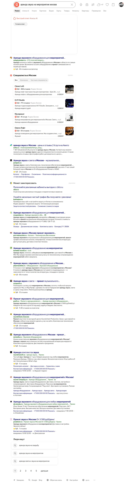

Четыре пути клиента — четыре разные задачи
Директ и Бизнес — способы управлять рекламой. Поиск, Карты и РСЯ — места показа. Текст, баннер, видео и пост — формы объявления. Эти списки не складываются в обязательные покупки.
| Когда нас ищут | Что человек увидит | Оплата и путь к заявке |
|---|---|---|
| Уже нужна услуга «Аренда звука с техником» | Поиск: объявление с заголовком, условиями, ссылкой и дополнениями. | Директ: клик либо выбранное действие по стратегии → страница услуги → ТЗ, звонок, форма. Обычная выдача поиска — отдельное бесплатное присутствие. |
| Проверяют компанию или ищут рядом | Карты: профиль, услуги, фотографии, отзывы и контакты. | Профиль бесплатен при соблюдении условий размещения. Заметность можно купить через Бизнес или Директ → звонок, сайт, маршрут. |
| Читают сайт, приложение или канал | Сеть и мессенджеры: баннер, видео, текст с фото или рекламный пост. | В зависимости от продукта — клики, действия или показы → кейс/сайт/канал → обращение. Не каждый контакт превращается в заявку сразу. |
| Выбирают исполнителя под задание | Исполнители: профиль с услугами и работами либо наш отклик на заказ. | Базовый профиль бесплатен. Отклики, продвижение и закрытие работы — отдельные расходы → переписка и смета. Подробно о бесплатном старте → |
Сейчас — понятная страница услуги, учёт обращений и проверка существующей карточки. Для платной проверки готовим один поисковый пилот. В Исполнителях можно начать бесплатно. РСЯ, подписка Бизнеса и реклама в каналах — последующие отдельные решения, а не обязательный комплект.
Проверено 1 ноября 2026. Полная карта с условиями и официальными источниками →
Полная карта инструментов без обязательных покупок
Возможностей у Яндекса больше двух. Но для первого решения важнее задача клиента и управляемая проверка одного канала.
Все основные семейства рекламы: от поиска до наружных экранов
| Семейство | Что входит | Роль для «Спектра» |
|---|---|---|
| Директ: заявки и продажи | Поисковые объявления; реклама на сайтах и в приложениях РСЯ; продвижение организаций в Картах; текст, изображение, видео. | Первый платный кандидат — отдельный поиск. РСЯ и возврат посетителей — позднее, с раздельным учётом. |
| Бизнес и геореклама | Бесплатная карточка; автоматическая подписка; обычное приоритетное размещение для сетей; брендированное размещение; медийные форматы Карт, Навигатора и Метро. | Сначала установить состояние карточки. Подписка и приоритетные продукты — минимум 90 дней, персональная цена. Обычный Приоритет сейчас предназначен для сетей. |
| Каналы Telegram и MAX | Посты с автоматическим или ручным выбором каналов; отдельный рекламный блок MAX в тестовом формате. | Позже: конкретное сообщение и релевантная аудитория. Автоподбор — клики; ручной выбор — показы/просмотры по условиям продукта. |
| ПромоСтраницы и Ритм | ПромоСтраница — рекламная статья с переходом к предложению. Ритм — визуальные публикации и отдельное платное усиление. | Кейс со сложной аргументацией может стать отдельным тестом. Не первый обязательный расход. |
| Охватная реклама | Медийные баннеры, видео, премиальные поверхности; аудиопакеты; цифровая наружная реклама. | Пока не приоритет. Показы и потенциальные контакты оценивают заметность, а не подтверждённые заявки. |
| UrbanAds | Реклама внешних брендов в Go, Еде, Лавке, Маркете и других городских сервисах. | Специальный вариант для широкой заметности. Не требует обязательно быть продавцом Маркета, но сейчас задача «Спектра» другая. |
| Товары и приложения | Каталожные и товарные объявления, фиды, продвижение приложений; буст товаров и полки Маркета/Лавки. | Не требуется для текущего предложения технических услуг. Вернуться при появлении подходящего каталога или собственного приложения. |
| Отраслевые продукты | Тематические разделы финансов, страхования и недвижимости; специальные проекты. | Доступность зависит от отрасли и программы. Нельзя подключить к любой услуге по одному наличию сайта. |
| Исполнители | Профиль услуг, бесплатные лимитированные отклики, подписка на отклики, продвижение, закрытие заказов. | Начать без покупки рекламы. Проверить подходящие задания и экономику настоящих заказов. |
Это карта основных семейств, а не перечень каждого размера баннера или индивидуального пакета. Полные модели оплаты, условия и ссылки по каждой строке — в справочнике.
Директ Про, Простой старт, Мастер и ЕПК — это четыре рекламы?
Нет. Директ Про — расширенный интерфейс. Простой старт — сильно автоматизированный запуск. Мастер кампаний — пошаговый помощник. ЕПК — инструмент, в котором можно управлять группами, материалами и местами показа. Они не являются четырьмя отдельными аудиториями.
Для проверяемого поискового пилота рекомендуем ЕПК с разделением мест показа. Это выбор способа управления экспериментом, не обещание лучшей окупаемости.
У Простого старта есть особое правило: самостоятельно остановить кампанию можно в первые сутки или через месяц; в промежутке — через поддержку. Оно не относится ко всему Директу. Официальные условия →
Клики, показы, конверсии: за что берут деньги
За клик (CPC) — человек перешёл. За выбранное действие (CPA) — сработала настроенная цель; клик по телефону ещё не договор. За тысячу показов (CPM) — рекламу показали, но это не тысяча уникальных заказчиков. У статей, постов, приложений и наружных экранов есть свои модели.
Цель оптимизации и событие списания могут различаться: настройка «Максимум конверсий» не всегда означает оплату только конверсий. Подписка Бизнеса — бюджет на период; закрытие заказа Исполнителей — другой расход.
Ретаргетинг — способ выбрать прежних посетителей, а не отдельная площадка с универсальным тарифом.
Как выглядит объявление → · Что установлено о нашей карточке → · Что уже исследовали →
Что именно предлагаем в Яндексе
Поиск и РСЯ — места показа Директа. Яндекс Бизнес — другой способ запуска рекламы. А конкретная услуга и срок сметы — гипотезы о предложении клиенту.
Поиск
Ответ на запрос человека, который уже ищет услугу. Здесь сначала проверяем одно предложение «Спектра».
Первая гипотеза →Рекламная сеть
Объявления на площадках сети Яндекса. Для неё оставлены две отдельные идеи с другими материалами и условиями проверки.
Две идеи для РСЯ →Яндекс Бизнес
Рекламная подписка создаёт объявления и распределяет бюджет между Поиском, Картами и сетью.
Карточка и условия →Четыре части одного предложения
Рекламодатель задаёт материалы. Яндекс собирает показ под площадку и устройство; не все дополнения появляются одновременно.
- ЗаголовокНазывает услугу и главное отличие: «звук для мероприятий с техником».
- Основной текстОбъясняет состав работы и следующий шаг: доставка, настройка, специалист, запрос ТЗ.
- СсылкаВедёт на страницу нужной услуги сайта spectr-svet.ru; отображаемый адрес — отдельный элемент.
- ДополненияБыстрые ссылки на кейсы и расчёт, уточнения, связанные контакты организации. Рейтинг и отзывы нельзя придумать.
Размеры полей и подтверждённый пример Поиска
В Директе: заголовок до 56 знаков, текст до 81. Быстрые ссылки и уточнения — отдельные поля. Система может сокращать текст; видимость всех элементов не гарантирована. Несколько вариантов в одной группе не означают равномерный A/B-тест.
В Бизнесе у собственного объявления также есть заголовок и текст, а у рекламируемой услуги — отдельные название и описание. Конкретные поля зависят от типа материала. Полная схема и официальные правила →


6 гипотез → 2 приоритета → 1 первый пилот
Это шесть кандидатов для Яндекса. Контент, карточки компании и проверка Telegram — отдельные задачи подготовки; в число рекламных тестов ниже они не входят.
- 1 · СНАЧАЛАПоиск конкретной услуги даст подходящие заказы
Есть спрос и предложения конкурентов; качество и стоимость наших будущих обращений ещё неизвестны.
- 2 · СЛЕДОМКонкретный срок сметы поможет получить обращение
Такое обещание встречается у 8 доменов. Проверяем после подтверждения срока командой и появления данных первого пилота.
- 3 · РЕЗЕРВУпоминание закупочной задачи привлечёт учреждения
Сегмент есть в брифе; по узким формулировкам мало прогнозного спроса. Сначала уточнить, как эти заказчики находят подрядчика.
- 4 · РЕЗЕРВОтдельное предложение спектакля привлечёт его заказчиков
Широкий запрос «выездной театр» включает разные аудитории. Для взрослого корпоративного спектакля нужны своя проверка спроса и готовый продукт.
- 5 · РЕЗЕРВФото инженера даст больше подходящих обращений, чем вид площадки
В миниатюрах конкурентов видны техника и площадки. Их результат неизвестен; сравнение с фото инженера — наша гипотеза.
- 6 · РЕЗЕРВКонкретная услуга в РСЯ окажется понятнее общего «под ключ»
Встречаются оба сообщения; их результат неизвестен. Проверять отдельно от фотографии.
Почему рекомендуем две, а не все шесть: сначала нужно узнать, какие обращения даёт поиск и сколько они стоят. Затем можно менять обещание в уже понятной услуге. У остальных идей есть отдельные пробелы в спросе, готовности продукта или данных РСЯ. Это порядок снижения неопределённости, а не прогноз победителей.
Что действительно исследовано
Три разных вида данных. Они отвечают на разные вопросы и не складываются в доказательство эффективности рекламы.
По 23 фразам собраны объявления из SpyWords; по остальным 74 — первая страница живого поиска. В отчёте зафиксированы 386 текстов и 208 доменов. Среди них есть агрегаторы и смежные услуги.
МОСКВА В SPYWORDS · МОСКВА И МО В ЖИВОЙ ВЫДАЧЕВвели 96 фраз: две формулировки сервис объединил; адрес сайта из списка 97 не вводили. Это оценка поискового спроса и расходов за 30 дней, а не результат рекламной кампании.
ПРОГНОЗ ПОИСКА · НЕ КЛИКИ КОНКУРЕНТОВ И НЕ БЮДЖЕТ РСЯУ 8 найдены записи в демо Keys.so, у одного данных нет. На домен доступно до 10 записей. Центральные миниатюры различимы; полные исходники не получены. Остальные 16 доменов не проверены из-за лимита.
ЧАСТИЧНЫЙ АРХИВ · ЭФФЕКТИВНОСТЬ НЕИЗВЕСТНАИсторический протокол · отчёт 44 · Поправки к выводам · аудит
Что видно на сохранённых миниатюрах РСЯ: три примера
rentaplazma
Оранжевый макет с крупным текстом об аренде LED-экранов; отдельные макеты сенсорных панелей и телевизоров.
Открыть исходный снимок таблицы →
lsmedia-sound
Пульт и кабели, сценические лучи, зал с людьми. Видно различие между демонстрацией техники и готовой площадки.
Открыть исходный снимок таблицы →
soundman24
Колонки, рука на пульте, освещённый зал. Это примеры композиции; происхождение фотографий и продажи по ним неизвестны.
Открыть исходный снимок таблицы →
Снимки сделаны 28 октября; даты самих объявлений разные. Аудит 1 ноября исправил прежнюю формулировку «картинки нечитаемы»: центральные кадры видны во всех восьми таблицах. Размыты поля вокруг них. Наличие приёма в рекламе не доказывает его результативность.
Сначала подтвердить карточку «Спектра»
Однозначно установить публичную карточку пока не удалось. В материалах сохранён текст черновика, но это не подтверждает его наличие в кабинете. Статус публикации и модерации не проверен.
Сайт, телефон и адрес
Проверены данные spectr-svet.ru, телефон и адрес компании. Доступный кабинет требует входа; публичное совпадение карточки не установлено.
Проверить в кабинете владельца
Открыть список компаний владельца, найти существующую карточку и её статус. Если карточки нет, использовать подготовленные тексты. До проверки не создавать дубль.
Что проверено, ограничения и источники
Публичная карточка и доступ владельца — разные источники. Для вывода о публикации нужен фактический статус в кабинете и подтверждение соответствующей страницы в публичной выдаче. Наличие черновика не доказывает прохождение модерации.
Две гипотезы для Поиска: сначала оценить цену
Поиск может привести человека с готовым запросом, но высокая конкуренция может сделать заявку дорогой. Запуск зависит от расчёта и допустимой стоимости заказа.
Поиск конкретной услуги даст подходящие заказы
Рабочая стартовая услуга: звук для мероприятия с доставкой, настройкой и сопровождением. Выбор уточняем по доступности команды и экономике заказа.
Что увидели. В прогнозе 28.10.2026 для Москвы и МО: «аренда звука» — 247 запросов за 30 дней, «аренда звукового оборудования» — 241. В объявлениях встречаются доставка, настройка и сопровождение. Отчёт 46 · строки 17 и 19, разбор B. Снимок с пометкой «Промо» →
Почему это гипотеза. Спрос есть, но неизвестно, сколько людей ищут именно обслуживание мероприятия. Нельзя складывать две частотности как число уникальных клиентов или обещать заявки.
Главный риск. Запросы на недорогой прокат без команды. Цена и состав предложений в выдаче различаются; привлекательная цена клика ещё не означает подходящий заказ.
Что запускаем и по какому результату решаем
Первый запуск. Одна услуга, поисковые запросы о ней, согласованная география и одна страница с составом работ и кейсом. В объявлении сразу называем доставку, настройку и сопровождение. Черновик: «Звук для мероприятия с настройкой». Бюджет пока не назначен.
Что проверяем. Реальные запросы, расходы, состоявшиеся обращения, роль заказчика, задачу, дату, географию, подходящий объём заказа и дальнейший статус сметы. Заранее определяем вместе с командой, какие обращения ей подходят.
Почему звук. Это существующая услуга, которую можно описать конкретно. У общего «технического обеспечения мероприятий» прогноз больше — 1 036 запросов, но выдача содержит и смежные предложения. Сами цифры не доказывают превосходство звука: если его экономика хуже комплексного заказа, меняем стартовую услугу до расходов.
Что не считаем отдельной гипотезой. Понятный заголовок и соответствующая страница — необходимые условия запуска. После пилота можно сравнить общий и конкретный заголовки; сначала важнее выяснить, приносит ли предложение нужные обращения. Принцип соответствия объявления и страницы · Яндекс.
Решение: продолжать, если получаем подходящие обращения по цене в заранее согласованном пределе и видим движение к сметам. При преобладании неподходящего проката — пересобрать запросы и предложение. При малом объёме — «данных недостаточно», без заявления об окупаемости.
Сделать срок расчёта понятным
Гипотеза: конкретный срок поможет заказчику решиться на отправку ТЗ.
Основание. В срезе 386 текстов у 8 доменов есть срок расчёта: например, soundcheck.moscow — 15 минут, moment-x.ru — 5 минут. Это знакомый рынку аргумент, его эффективность неизвестна. Примеры · отчёт 46.
Наша проверка. Помогает ли выполнимый срок получить больше подходящих обращений при приемлемой стоимости. «20 минут» из брифа нельзя превращать в безусловное обещание без состава ТЗ и рабочих часов.
Почему второй. Используем ту же услугу и страницу; меняем одно обещание. Если первый пилот не привёл нужных заказчиков, сначала исправляем предложение и запросы.
Основание, условия теста и критерий решения
Основание. В срезе 386 текстов восемь доменов уже обещают расчёт за определённое время. Значит, скорость — знакомый рынку аргумент, а не доказанное отличие «Спектра». Кликов и продаж этих конкурентов мы не знаем. Данные: отчёт 46.
Сравнить только текст. A: «Рассчитаем смету под задачу мероприятия». B: «Рассчитаем смету за 20 минут после получения ТЗ».
Условие запуска. 20 минут — черновик из брифа. Сначала команда подтверждает срок, необходимый состав ТЗ и часы приёма. Если выполнить обещание нельзя, меняем его на подтверждённое или откладываем тест. Условия должны быть на странице. Метод: конкретный офер.
Оставить одинаковым. Заголовок, запросы, страницу, регион, цель, стратегию и бюджет на долю аудитории.
Решение: цена квалифицированного запроса на смету и соблюдение обещанного срока. Рост обращений при срывах срока — основание остановить обещание, а не масштабировать его.
Две идеи для других заказчиков
Не включаем их в первый бюджет. Возвращаемся, когда устранены указанные пробелы.
Закупочный сегмент требует отдельной проверки спроса
Гипотеза: указание закупочной задачи поможет привлечь подходящие учреждения.
Основание. Учреждения и парки названы в брифе; в поисковом срезе 44-ФЗ упоминают уже два домена. У ряда узких фраз — 0–3 прогнозных запроса. Кластер J · отчёт 46.
Почему резерв. Сначала уточнить покупательский путь и поисковые формулировки. Малый прогноз не доказывает отсутствия закупок, а отсутствие объявления в выборке — свободной ниши.
Основание, условия теста и критерий решения
Основание. В брифе выделены парки и учреждения. В последнем поисковом срезе 44‑ФЗ уже упоминают два домена, а у узких фраз о закупках и парках — по 0–3 прогнозных запроса за месяц. Отсутствие фразы в частичном архиве РСЯ не доказывает свободный рынок. Бриф · отчёт 46.
Черновик заголовков. A: «Техническое обеспечение городских мероприятий». B: «Техобеспечение для учреждений: 44-ФЗ и 223-ФЗ».
Условие запуска. Подтвердить документы и формулировку с командой; проверить фактические запросы. Оба варианта ведут на одну страницу для учреждений и получают одинаковую закупочную семантику. Меняется только заголовок. Метод: сегментация по задаче.
Решение: цена квалифицированного закупочного обращения. При текущем малом прогнозе A/B не приоритетен; сайт может помогать проверять подрядчика после знакомства через закупочную площадку.
Дать спектаклю собственную страницу
Гипотеза: программа, формат и условия выезда помогут получить обращение на спектакль.
Основание. «Выездной театр» — 324 прогнозных запроса, но «спектакль на корпоратив» — 6, «выездной спектакль для взрослых» — 1. Широкое число нельзя выдавать за спрос на взрослый спектакль «Спектра». Строки 90–92 · отчёт 46.
Почему резерв. Нужны подтверждённая программа, условия площадки, даты и отдельная экономика. При малом объёме разумнее проверить одно предложение, чем делить его на две страницы для A/B.
Основание, условия теста и критерий решения
Основание. У запроса «выездной театр» — 324 прогнозных запроса за 30 дней в Москве и МО. В рекламе уже встречаются взрослый театр и иммерсивные программы: ниша не пустая. Данные: отчёт 46.
Первый шаг после подготовки продукта. Одна отдельная страница спектакля с программой, взрослой аудиторией, условиями площадки, датами и формой обращения. Один пилот проверяет спрос на это предложение; бюджет между двумя страницами пока не делим.
Условия пилота. Театральные запросы и география отдельно от техники. Предложение «Выездной спектакль на корпоратив» ведёт на страницу этого продукта. До расходов подтвердить репертуар, условия выезда и экономику. Обращения на билеты и детские программы учитывать отдельно от нужного заказа.
Что взяли из статьи о театре. Разделять задачи и аудитории. Продажа билетов зрителям отличается от заказа выездного спектакля компанией: билетные показатели не переносим на «Спектр». Материал Яндекса.
Что можно сравнить позже. Общий каталог с полноценным театральным предложением и отдельную страницу — только если пилот покажет достаточный поток для A/B. Это не обязательный первый шаг и не ещё одна кампания в текущем плане.
Решение: цена квалифицированного обращения на выездной спектакль. При недостатке обращений результат остаётся неопределённым.
Две идеи для отдельного теста РСЯ
РСЯ — объявления на партнёрских площадках Яндекса. Если узкий Поиск слишком дорог, это возможная альтернатива. Чужие креативы не доказывают её окупаемость; нужен свой тест с учётом заявок.
Фото инженера поможет продать работу команды
Гипотеза: при одинаковых условиях фото инженера на монтаже даст больше подходящих обращений, чем общий вид готовой площадки.
Основание. Инструкция Яндекса рекомендует реальные качественные фотографии. Предположение, что инженер на монтаже или готовая площадка приведут разные по качеству обращения, — наше. В миниатюрах Keys.so видны оборудование и площадки, но результат этих приёмов неизвестен. Источник правила о фото.
Что сравнить позже. Два собственных фото при одинаковом сообщении, аудитории и странице. Сначала нужны разрешённые к использованию материалы и учёт обращений.
Основание, условия теста и критерий решения
Основание. В сохранённых миниатюрах конкурентов различимы техника, площадки и текстовые макеты. Полные исходники и результаты рекламы недоступны; это ограничивает выводы. В инструкции Яндекс Бизнеса рекомендованы чёткие реалистичные фото услуги. Наше предположение: процесс работы покажет компетентность команды, а готовая площадка — результат. Метод: фото рекламных материалов.
Сравнить. A: реальный инженер «Спектра» на монтаже. B: готовая площадка с оборудованием «Спектра». По возможности — одно мероприятие, одинаковые кадрирование и качество. Меняется только фото; текст в обоих вариантах: «Звук и свет для вашего мероприятия».
Оставить одинаковым. Текст, аудиторию, географию, стратегию, бюджет на долю аудитории, цель, формат и посадочную страницу.
Главная метрика: квалифицированные обращения и их стоимость; отдельно проверить качество площадок РСЯ.
ИСТОРИЧЕСКИЙ СРЕЗ · ОТЧЁТ 44 С ПОПРАВКОЙ АУДИТА ↗Конкретная услуга или весь комплекс?
Проверить, что лучше приводит нужного B2B-заказчика из одного и того же сегмента.
Основание. В частичном архиве встречаются общие и конкретные предложения. Нет данных, какое из них приносит заказы. Наблюдения · отчёт 44.
Что сравнить позже. «Техническое обеспечение мероприятий» и «Звук и свет для корпоративного мероприятия». Фото, аудитория и страница одинаковые; тест не объединяем с № 5.
Основание, условия теста и критерий решения
Основание. В объявлениях конкурентов встречаются и товарные заголовки, и общие обещания «под ключ». Мы не видим их кликов и конверсий, поэтому не знаем, какой подход эффективнее.
Сравнить. A: «Техническое обеспечение мероприятий». B: «Звук и свет для корпоративного мероприятия». Оба — для одного корпоративного сегмента, на одной странице с этими услугами. Конкретика может лучше объяснить предложение человеку, который сейчас не ищет подрядчика; это наше предположение. Метод: сообщение для РСЯ.
Оставить одинаковым. Изображение, текст, корпоративный сегмент аудитории, географию, стратегию, цель, бюджет на долю аудитории и посадочную страницу. Меняется только заголовок.
Главная метрика: цена квалифицированного обращения. Просмотры и CTR — только промежуточные сигналы.
ИСТОЧНИК: ОТЧЁТ 44 · ЭФФЕКТИВНОСТЬ НЕИЗВЕСТНА ↗Это будущая настройка показа прежним посетителям, а не седьмая гипотеза в текущем списке. Возвращаемся к ней после накопления подходящей аудитории и проверки целей.
Сначала настроить учёт, затем сравнивать варианты
Это предложенный протокол «Спектра» по материалам Яндекса. В доступных материалах нет результатов собственных кампаний: узкое место воронки пока не установлено.
До расходов нужно определить четыре вещи
- Услуга и клиент: какой заказ готовы выполнить, в каком регионе и с каким минимальным объёмом.
- Учёт: тестовая заявка доходит, звонок или сообщение подтверждены, источник и результат записываются.
- Экономика: допустимая стоимость подходящего обращения, общий лимит и дата пересмотра. Сейчас эти значения не согласованы.
- Правило остановки: лимит исчерпан, качество обращений не подходит или обещание невозможно выполнить — остановить и разобрать причину.
Три возможных вывода: продолжать; пересобрать или отклонить; данных недостаточно. Один удачный звонок, высокий CTR или истечение двух недель сами по себе не подтверждают гипотезу.
Открыть протокол учёта и сравнения
В Метрике проверяем успешную отправку формы. Клик по телефону, переход в мессенджер и открытие формы учитываем отдельно: они ещё не подтверждают разговор или заявку. Звонок или сообщение сверяем с фактом обращения и источником.
Предлагаем считать квалифицированным уникальное обращение с доступным контактом, задачей мероприятия, нужной услугой и обслуживаемым регионом. Менеджер отмечает соответствие и причину отказа. Спам, дубли и предложения поставщиков не включаем; неизвестный статус показываем отдельно.
Расход варианта ÷ число его квалифицированных обращений за один период. Дополнительно: доля подходящих обращений, согласованные сметы и договоры после одинакового срока обработки. При нуле обращений цену не записываем как 0 ₽: показываем расход и «обращений нет».
Сначала один поисковый пилот по услуге. Проверяем запросы и минус-фразы, доставку обращений и их качество. Пока не знаем собственную конверсию, не делим небольшой поток на шесть тестов. РСЯ и ретаргетинг — следующие шаги по мере готовности данных и материалов.
Когда объёма хватает, запускаем один тест с одновременными непересекающимися группами 50/50 через эксперименты Директа. Меняем один элемент; бюджеты пропорциональны долям. Поиск и РСЯ, звук и театр — отдельные сравнения. Два объявления в одной группе сами по себе не гарантируют равного распределения.
До старта фиксируем главную метрику, допустимую цену обращения по экономике заказа, минимально полезный эффект, объём выборки, срок и лимит расхода. После пилота оцениваем, достижима ли такая выборка. Лимит не означает, что к этому моменту обязательно появится победитель.
Просмотрены 426 заголовков; 22 статьи использованы в методике
Проверены 48 страниц каталога и сохранены тексты 22 выбранных статей; отдельно прочитана статья о публикациях профиля. Аудит подтвердил файлы и записи выполнения. Это работа над методикой исследования, а не доказательство настройки кампаний или их результата.
Что это изменило: один пилот вместо одновременного запуска всех идей; совпадение запроса, предложения и страницы; проверка состоявшихся обращений; изменение одной переменной в эксперименте.
Чего статьи не дали: собственной конверсии «Спектра», допустимой цены заявки, размера бюджета и победившего креатива. Эти величины нельзя заимствовать из чужого примера.
Посмотреть доказательства выполненного анализа →Объём и дата проверки материалов
Проверка названий выполнена 1 ноября 2026 года. Сайт Яндекс Бизнеса в разделе «Статьи о бизнесе» ведёт в Базу знаний Директа. Просмотрены заголовки всех 48 доступных страниц этого каталога: 426 уникальных материалов, из них 10 помечены «Яндекс Бизнес». Это полный обход видимой пагинации на дату проверки, а не заявление о полноте всех материалов Яндекса.
Граница чтения и актуальность источников
22 отобранные статьи: правило → изменение отчёта
Спрос и соответствие предложения
Основание, условия теста и критерий решения
В методике: разделить услуги, намерения и регионы; убрать нерелевантные запросы. При сравнении текста все эти условия одинаковы. Прогноз спроса берём из отчёта 46, а не из примеров учебных статей.
Один проверяемый эксперимент
Основание, условия теста и критерий решения
В методике: начать с одного пилота, затем сравнить один элемент в сопоставимых условиях. Не делить малый поток между всеми идеями сразу. Недостаточная выборка даёт неопределённый результат.
Офер и визуальный материал
Основание, условия теста и критерий решения
В методике: конкретные и выполнимые обещания; отдельно проверить заголовок и фото. Инструкция Бизнеса по материалам дополняет это требованием чётких реалистичных изображений.
Качество и стоимость обращения
Основание, условия теста и критерий решения
В методике: определить событие, отделять подходящие обращения от остальных и оценивать стоимость результата. Из оптовой статьи переносим принцип квалификации, а не требования к закупке оптом. CTR не заменяет эту оценку.
Источник → обращение → сделка
Основание, условия теста и критерий решения
В методике: проверить счётчик и цели, отмечать вариант в обращении, отслеживать фактические звонки и дальнейшие статусы. Клик по номеру и посещение формы остаются вспомогательными событиями.
Особые задачи: РСЯ и театр
Основание, условия теста и критерий решения
В методике: Поиск и сеть требуют разных сообщений, театральный продукт — своей страницы и аудитории. Статья о театре в основном о зрителях и билетах; это ограничивает перенос на заказ выездного спектакля.
Инструкции Бизнеса, учебные материалы и актуальная справка
Примеры и средние показатели в учебных статьях не являются прогнозом «Спектра». Из публичных объявлений узнаём формулировки, но не их клики, конверсии и окупаемость.
Что отложили и почему: Бизнес и смежные темы
Материалы с меткой «Яндекс Бизнес»
Основание, условия теста и критерий решения
Все 10 заголовков проверены. Публикации и истории профиля (статья «Три инструмента…») прочитаны: это полезная подготовка доверия в Картах, но отдельная задача. Рейтинг, отзывы, рефералы и бесплатное продвижение не выбирают победителя рекламного A/B. Добавление организации — подготовка контактов, а не основание обещать заявки.
Смежные ниши и преждевременные метрики
Основание, условия теста и критерий решения
Продажа промышленного оборудования и аренда спецтехники отличаются от сопровождения мероприятия. Их результаты не переносим. Лид-форма, баннер и CTA — будущие самостоятельные тесты; CAC и ROMI требуют своих клиентов и выручки. Это отбор по названиям: чтение этих текстов не заявляем.
Проверить весь реестр: 426 заголовков, ссылки и решения отбора
Снимок видимого каталога: страницы 1–47 по девять карточек, страница 48 — три. «Использовано в методике» означает прочитанный текст и правило выше. «Отложено» и «Не отобрано» — решение для текущего пилота, а не оценка качества статьи. Для большинства из них изучалось название, без чтения текста.
- Продвижение банных печей и каминов: как повысить спрос и продажи НЕ ОТОБРАНО · По названию: другая ниша, канал или бизнес-задача; не используем как основание тестов «Спектра». Текст не заявлен прочитанным.
- Эффективная реклама лазерной эпиляции и шугаринга: идеи маркетинга НЕ ОТОБРАНО · По названию: другая ниша, канал или бизнес-задача; не используем как основание тестов «Спектра». Текст не заявлен прочитанным.
- Продвижение аренды коммерческой недвижимости НЕ ОТОБРАНО · По названию: другая ниша, канал или бизнес-задача; не используем как основание тестов «Спектра». Текст не заявлен прочитанным.
- Продвижение языковой школы: реклама курсов иностранного языка НЕ ОТОБРАНО · По названию: другая ниша, канал или бизнес-задача; не используем как основание тестов «Спектра». Текст не заявлен прочитанным.
- Как оптовому бизнесу привлекать клиентов в интернете НЕ ОТОБРАНО · По названию: другая ниша, канал или бизнес-задача; не используем как основание тестов «Спектра». Текст не заявлен прочитанным.
- Маркетинг в театральной сфере: продвижение спектаклей и культурных мероприятий ИСПОЛЬЗОВАНО В МЕТОДИКЕ · Разделяем театральный продукт и аудиторию; не переносим продажу билетов на B2B-заказ.
- Как продвигать бизнес в сфере строительства и ремонта НЕ ОТОБРАНО · По названию: другая ниша, канал или бизнес-задача; не используем как основание тестов «Спектра». Текст не заявлен прочитанным.
- Как продвигать онлайн-школу и курсы: особенности ниши и каналы привлечения клиентов НЕ ОТОБРАНО · По названию: другая ниша, канал или бизнес-задача; не используем как основание тестов «Спектра». Текст не заявлен прочитанным.
- Маркетинг в сфере здорового питания: как продвигать ПП-продукты НЕ ОТОБРАНО · По названию: другая ниша, канал или бизнес-задача; не используем как основание тестов «Спектра». Текст не заявлен прочитанным.
- Маркетинг в сфере натяжных потолков: тексты, идеи креативов и способы продвижения НЕ ОТОБРАНО · По названию: другая ниша, канал или бизнес-задача; не используем как основание тестов «Спектра». Текст не заявлен прочитанным.
- Что такое Яндекс Директ и как он работает ОТЛОЖЕНО · Смежная тема; отбор по заголовку. Не добавляет отдельной проверяемой переменной к первому пилоту, отложено до собственных данных или запуска.
- Как продвигать частный детский сад в 2026 году НЕ ОТОБРАНО · По названию: другая ниша, канал или бизнес-задача; не используем как основание тестов «Спектра». Текст не заявлен прочитанным.
- Маркетинг компьютерного клуба: как продвигать игровой клуб и привлекать клиентов НЕ ОТОБРАНО · По названию: другая ниша, канал или бизнес-задача; не используем как основание тестов «Спектра». Текст не заявлен прочитанным.
- Маркетинг в сфере напольных покрытий и тёплых полов: как выстроить продвижение и повысить спрос НЕ ОТОБРАНО · По названию: другая ниша, канал или бизнес-задача; не используем как основание тестов «Спектра». Текст не заявлен прочитанным.
- Продвижение оборудования: стратегии маркетинга промышленной продукции ОТЛОЖЕНО · Другая модель: продажа промышленного оборудования; это не аренда техники с сопровождением.
- Как продвигать строительные материалы в Яндекс Директе НЕ ОТОБРАНО · По названию: другая ниша, канал или бизнес-задача; не используем как основание тестов «Спектра». Текст не заявлен прочитанным.
- Что такое Direct Mail и как работают прямые рассылки в маркетинге НЕ ОТОБРАНО · По названию: другая ниша, канал или бизнес-задача; не используем как основание тестов «Спектра». Текст не заявлен прочитанным.
- Как сделать видеобаннер для рекламы: форматы, требования и настройка ОТЛОЖЕНО · Смежная тема; отбор по заголовку. Не добавляет отдельной проверяемой переменной к первому пилоту, отложено до собственных данных или запуска.
- Как открыть интернет-магазин: пошаговая инструкция НЕ ОТОБРАНО · По названию: другая ниша, канал или бизнес-задача; не используем как основание тестов «Спектра». Текст не заявлен прочитанным.
- Продвижение магазина осветительных приборов: как увеличить продажи светильников, ламп и люстр НЕ ОТОБРАНО · По названию: другая ниша, канал или бизнес-задача; не используем как основание тестов «Спектра». Текст не заявлен прочитанным.
- Способы продвижения сервисного центра по ремонту бытовой техники НЕ ОТОБРАНО · По названию: другая ниша, канал или бизнес-задача; не используем как основание тестов «Спектра». Текст не заявлен прочитанным.
- Ритейл: что это такое, как работает и на чём зарабатывают ритейлеры НЕ ОТОБРАНО · По названию: другая ниша, канал или бизнес-задача; не используем как основание тестов «Спектра». Текст не заявлен прочитанным.
- Пользовательский сценарий: что это и как его составить ОТЛОЖЕНО · Смежная тема; отбор по заголовку. Не добавляет отдельной проверяемой переменной к первому пилоту, отложено до собственных данных или запуска.
- Как добавить сайт в Яндекс: регистрация в Вебмастере и настройка индексации НЕ ОТОБРАНО · По названию: другая ниша, канал или бизнес-задача; не используем как основание тестов «Спектра». Текст не заявлен прочитанным.
- Что такое каноническая ссылка на страницу: как прописать rel canonical и зачем это нужно НЕ ОТОБРАНО · По названию: другая ниша, канал или бизнес-задача; не используем как основание тестов «Спектра». Текст не заявлен прочитанным.
- Продвижение в нише автоматических ворот: как увеличить продажи и привлечь клиентов НЕ ОТОБРАНО · По названию: другая ниша, канал или бизнес-задача; не используем как основание тестов «Спектра». Текст не заявлен прочитанным.
- Продвижение услуг подолога: маркетинг в сфере подологии и привлечение клиентов НЕ ОТОБРАНО · По названию: другая ниша, канал или бизнес-задача; не используем как основание тестов «Спектра». Текст не заявлен прочитанным.
- Как узнать, кто, когда и зачем заходил к вам на сайт ОТЛОЖЕНО · Смежная тема; отбор по заголовку. Не добавляет отдельной проверяемой переменной к первому пилоту, отложено до собственных данных или запуска.
- Как продвижение в Директе помогло производителю металлоконструкций найти целевой спрос НЕ ОТОБРАНО · По названию: другая ниша, канал или бизнес-задача; не используем как основание тестов «Спектра». Текст не заявлен прочитанным.
- Как составить календарь инфоповодов: зачем он нужен и какие события включить НЕ ОТОБРАНО · По названию: другая ниша, канал или бизнес-задача; не используем как основание тестов «Спектра». Текст не заявлен прочитанным.
- Открытые вопросы в продажах: как выявлять потребности клиента НЕ ОТОБРАНО · По названию: другая ниша, канал или бизнес-задача; не используем как основание тестов «Спектра». Текст не заявлен прочитанным.
- SEO-продвижение сайта товаров: чек-лист НЕ ОТОБРАНО · По названию: другая ниша, канал или бизнес-задача; не используем как основание тестов «Спектра». Текст не заявлен прочитанным.
- Маркетинг в сфере лестниц на заказ: как привлекать клиентов и увеличивать количество заявок НЕ ОТОБРАНО · По названию: другая ниша, канал или бизнес-задача; не используем как основание тестов «Спектра». Текст не заявлен прочитанным.
- Маркетинг в сфере аренды спецтехники: стратегии продвижения и привлечение заказчиков ОТЛОЖЕНО · Смежная аренда, но спецтехника имеет другую задачу и спрос; численные ориентиры не переносим.
- Продвижение бурения скважин и установки септиков: как находить клиентов и получать заявки на буровые работы НЕ ОТОБРАНО · По названию: другая ниша, канал или бизнес-задача; не используем как основание тестов «Спектра». Текст не заявлен прочитанным.
- SMM для бизнеса: как продвигаться в социальных сетях НЕ ОТОБРАНО · По названию: другая ниша, канал или бизнес-задача; не используем как основание тестов «Спектра». Текст не заявлен прочитанным.
- Продвижение мебельного производства: как увеличить онлайн-заявки НЕ ОТОБРАНО · По названию: другая ниша, канал или бизнес-задача; не используем как основание тестов «Спектра». Текст не заявлен прочитанным.
- Как продвигать малый и средний бизнес: стратегии, каналы и оценка эффективности ОТЛОЖЕНО · Смежная тема; отбор по заголовку. Не добавляет отдельной проверяемой переменной к первому пилоту, отложено до собственных данных или запуска.
- Эффективная реклама для малого и среднего бизнеса: лучшие способы продвижения компании ОТЛОЖЕНО · Смежная тема; отбор по заголовку. Не добавляет отдельной проверяемой переменной к первому пилоту, отложено до собственных данных или запуска.
- Что такое постинг: виды, инструменты и правила публикации контента НЕ ОТОБРАНО · По названию: другая ниша, канал или бизнес-задача; не используем как основание тестов «Спектра». Текст не заявлен прочитанным.
- Как определить сезонность товара: формула расчёта и методы анализа для прогнозирования продаж ОТЛОЖЕНО · Смежная тема; отбор по заголовку. Не добавляет отдельной проверяемой переменной к первому пилоту, отложено до собственных данных или запуска.
- Как прогнозировать спрос на товары и услуги: этапы и инструменты для точного планирования ОТЛОЖЕНО · Смежная тема; отбор по заголовку. Не добавляет отдельной проверяемой переменной к первому пилоту, отложено до собственных данных или запуска.
- Как привести клиентов на сайт и мотивировать их делать покупки ОТЛОЖЕНО · Смежная тема; отбор по заголовку. Не добавляет отдельной проверяемой переменной к первому пилоту, отложено до собственных данных или запуска.
- Где найти маркетолога: на что обратить внимание при выборе и как оценить компетенции кандидата НЕ ОТОБРАНО · По названию: другая ниша, канал или бизнес-задача; не используем как основание тестов «Спектра». Текст не заявлен прочитанным.
- Что такое анализ рынка: виды, инструменты и способы исследования спроса для стратегии и роста бизнеса ОТЛОЖЕНО · Смежная тема; отбор по заголовку. Не добавляет отдельной проверяемой переменной к первому пилоту, отложено до собственных данных или запуска.
- Что такое локальный рынок: примеры и способы адаптировать маркетинг с учётом региональной специфики ОТЛОЖЕНО · Смежная тема; отбор по заголовку. Не добавляет отдельной проверяемой переменной к первому пилоту, отложено до собственных данных или запуска.
- Кто такой SMM-менеджер и чем он занимается в соцсетях: особенности профессии НЕ ОТОБРАНО · По названию: другая ниша, канал или бизнес-задача; не используем как основание тестов «Спектра». Текст не заявлен прочитанным.
- Амбассадор: кто это и какую роль играет в продвижении бренда НЕ ОТОБРАНО · По названию: другая ниша, канал или бизнес-задача; не используем как основание тестов «Спектра». Текст не заявлен прочитанным.
- Что такое ИМК в маркетинге: виды, концепция и этапы управления интегрированными коммуникациями НЕ ОТОБРАНО · По названию: другая ниша, канал или бизнес-задача; не используем как основание тестов «Спектра». Текст не заявлен прочитанным.
- Как найти нишу для бизнеса: анализ рыночных направлений, критерии выбора и поиск целевой аудитории НЕ ОТОБРАНО · По названию: другая ниша, канал или бизнес-задача; не используем как основание тестов «Спектра». Текст не заявлен прочитанным.
- Маркетинг и продвижение чайного магазина: инструменты и примеры НЕ ОТОБРАНО · По названию: другая ниша, канал или бизнес-задача; не используем как основание тестов «Спектра». Текст не заявлен прочитанным.
- Маркетинг в сфере изготовления тортов на заказ: как продвигать кондитерские изделия НЕ ОТОБРАНО · По названию: другая ниша, канал или бизнес-задача; не используем как основание тестов «Спектра». Текст не заявлен прочитанным.
- Что такое массовая коммуникация, функции и средства в маркетинге НЕ ОТОБРАНО · По названию: другая ниша, канал или бизнес-задача; не используем как основание тестов «Спектра». Текст не заявлен прочитанным.
- Что такое B2B, B2C и B2G: как работают продажи и чем они различаются ОТЛОЖЕНО · Смежная тема; отбор по заголовку. Не добавляет отдельной проверяемой переменной к первому пилоту, отложено до собственных данных или запуска.
- Конкурентные преимущества фирмы: какие бывают, как их определить и сформировать ОТЛОЖЕНО · Смежная тема; отбор по заголовку. Не добавляет отдельной проверяемой переменной к первому пилоту, отложено до собственных данных или запуска.
- Что такое мультибренд: как он устроен и когда этот формат выгоден бизнесу НЕ ОТОБРАНО · По названию: другая ниша, канал или бизнес-задача; не используем как основание тестов «Спектра». Текст не заявлен прочитанным.
- Рентабельность бизнеса: как рассчитать и оценить эффективность компании НЕ ОТОБРАНО · По названию: другая ниша, канал или бизнес-задача; не используем как основание тестов «Спектра». Текст не заявлен прочитанным.
- Что такое кликбейт и как он работает ОТЛОЖЕНО · Смежная тема; отбор по заголовку. Не добавляет отдельной проверяемой переменной к первому пилоту, отложено до собственных данных или запуска.
- Что такое аутсорсинг: зачем нужен и как он помогает бизнесу НЕ ОТОБРАНО · По названию: другая ниша, канал или бизнес-задача; не используем как основание тестов «Спектра». Текст не заявлен прочитанным.
- Кто такой продуктовый маркетолог: чем он занимается и как им стать НЕ ОТОБРАНО · По названию: другая ниша, канал или бизнес-задача; не используем как основание тестов «Спектра». Текст не заявлен прочитанным.
- Как формируется рейтинг компании в Яндекс Картах и Поиске и как он влияет на бизнес ОТЛОЖЕНО · Яндекс Бизнес · Рейтинг и репутация в Картах — отдельная задача; рейтинг не доказывает эффективность рекламного текста.
- Маркетинг и продвижение кухонь на заказ: эффективные стратегии и инструменты НЕ ОТОБРАНО · По названию: другая ниша, канал или бизнес-задача; не используем как основание тестов «Спектра». Текст не заявлен прочитанным.
- Продвижение матрасов: эффективные маркетинговые стратегии для роста продаж НЕ ОТОБРАНО · По названию: другая ниша, канал или бизнес-задача; не используем как основание тестов «Спектра». Текст не заявлен прочитанным.
- Кто такой SEO-специалист: чем занимается и какие задачи выполняет НЕ ОТОБРАНО · По названию: другая ниша, канал или бизнес-задача; не используем как основание тестов «Спектра». Текст не заявлен прочитанным.
- Что такое поисковый запрос: структура, виды и примеры использования ИСПОЛЬЗОВАНО В МЕТОДИКЕ · Разделяем намерения запросов; не смешиваем услуги в сравнении.
- Что такое клиентский сервис: основы и особенности обслуживания клиентов ОТЛОЖЕНО · Смежная тема; отбор по заголовку. Не добавляет отдельной проверяемой переменной к первому пилоту, отложено до собственных данных или запуска.
- Маркетинг сварочных работ: как продвигать услуги и находить клиентов НЕ ОТОБРАНО · По названию: другая ниша, канал или бизнес-задача; не используем как основание тестов «Спектра». Текст не заявлен прочитанным.
- Что такое партизанский маркетинг, виды и примеры креативного продвижения НЕ ОТОБРАНО · По названию: другая ниша, канал или бизнес-задача; не используем как основание тестов «Спектра». Текст не заявлен прочитанным.
- Кто такой креативный директор: обязанности, навыки и карьерный путь НЕ ОТОБРАНО · По названию: другая ниша, канал или бизнес-задача; не используем как основание тестов «Спектра». Текст не заявлен прочитанным.
- Что такое личные продажи и как они работают в маркетинге НЕ ОТОБРАНО · По названию: другая ниша, канал или бизнес-задача; не используем как основание тестов «Спектра». Текст не заявлен прочитанным.
- Продвижение питьевой воды: маркетинговые стратегии и эффективные инструменты НЕ ОТОБРАНО · По названию: другая ниша, канал или бизнес-задача; не используем как основание тестов «Спектра». Текст не заявлен прочитанным.
- Что такое эластичность спроса и предложения, виды, формулы и как рассчитать коэффициент НЕ ОТОБРАНО · По названию: другая ниша, канал или бизнес-задача; не используем как основание тестов «Спектра». Текст не заявлен прочитанным.
- Как превратить потенциального клиента в покупателя ОТЛОЖЕНО · Смежная тема; отбор по заголовку. Не добавляет отдельной проверяемой переменной к первому пилоту, отложено до собственных данных или запуска.
- Нейромаркетинг: что это простыми словами, как работает и зачем он нужен НЕ ОТОБРАНО · По названию: другая ниша, канал или бизнес-задача; не используем как основание тестов «Спектра». Текст не заявлен прочитанным.
- Что такое ребрендинг, для чего и когда он нужен компании НЕ ОТОБРАНО · По названию: другая ниша, канал или бизнес-задача; не используем как основание тестов «Спектра». Текст не заявлен прочитанным.
- 12 архетипов бренда и их применение в маркетинге: характеристика и примеры НЕ ОТОБРАНО · По названию: другая ниша, канал или бизнес-задача; не используем как основание тестов «Спектра». Текст не заявлен прочитанным.
- Закон спроса и предложения: ценовые и неценовые факторы, которые влияют на рынок НЕ ОТОБРАНО · По названию: другая ниша, канал или бизнес-задача; не используем как основание тестов «Спектра». Текст не заявлен прочитанным.
- База клиентов: что это такое, как создать, вести и использовать в продажах ОТЛОЖЕНО · Смежная тема; отбор по заголовку. Не добавляет отдельной проверяемой переменной к первому пилоту, отложено до собственных данных или запуска.
- Типы клиентов: как понять покупателя и помочь ему принять решение ОТЛОЖЕНО · Смежная тема; отбор по заголовку. Не добавляет отдельной проверяемой переменной к первому пилоту, отложено до собственных данных или запуска.
- Маркетинг доставки: как продвигать еду навынос и увеличивать заказы НЕ ОТОБРАНО · По названию: другая ниша, канал или бизнес-задача; не используем как основание тестов «Спектра». Текст не заявлен прочитанным.
- Продвижение мёда: как выстроить маркетинг и увеличить продажи продукции НЕ ОТОБРАНО · По названию: другая ниша, канал или бизнес-задача; не используем как основание тестов «Спектра». Текст не заявлен прочитанным.
- Продвижение лагеря для детей: как набрать смену и увеличить продажи путёвок НЕ ОТОБРАНО · По названию: другая ниша, канал или бизнес-задача; не используем как основание тестов «Спектра». Текст не заявлен прочитанным.
- Маркетинг фотостудии: где искать клиентов и как превращать интерес в заявки НЕ ОТОБРАНО · По названию: другая ниша, канал или бизнес-задача; не используем как основание тестов «Спектра». Текст не заявлен прочитанным.
- Как продвигать детскую одежду: маркетинг, позиционирование и спрос НЕ ОТОБРАНО · По названию: другая ниша, канал или бизнес-задача; не используем как основание тестов «Спектра». Текст не заявлен прочитанным.
- Как продвигать магазин автозапчастей НЕ ОТОБРАНО · По названию: другая ниша, канал или бизнес-задача; не используем как основание тестов «Спектра». Текст не заявлен прочитанным.
- Что такое медиакит, для чего он нужен и как его правильно составить для бренда НЕ ОТОБРАНО · По названию: другая ниша, канал или бизнес-задача; не используем как основание тестов «Спектра». Текст не заявлен прочитанным.
- Что такое лестница Бена Ханта и как её можно использовать в маркетинге ОТЛОЖЕНО · Смежная тема; отбор по заголовку. Не добавляет отдельной проверяемой переменной к первому пилоту, отложено до собственных данных или запуска.
- Что такое метрики: основные показатели эффективности, формулы и примеры ОТЛОЖЕНО · Смежная тема; отбор по заголовку. Не добавляет отдельной проверяемой переменной к первому пилоту, отложено до собственных данных или запуска.
- Что такое бизнес-план и как правильно его составить для успешного старта проекта НЕ ОТОБРАНО · По названию: другая ниша, канал или бизнес-задача; не используем как основание тестов «Спектра». Текст не заявлен прочитанным.
- Что такое мобильный маркетинг и как с ним работать НЕ ОТОБРАНО · По названию: другая ниша, канал или бизнес-задача; не используем как основание тестов «Спектра». Текст не заявлен прочитанным.
- Как получить знак и наклейку «Хорошее место» от Яндекса: инструкция и советы НЕ ОТОБРАНО · По названию: другая ниша, канал или бизнес-задача; не используем как основание тестов «Спектра». Текст не заявлен прочитанным.
- Что такое показатели ARPU и ARPPU, как они считаются и в чём их различия НЕ ОТОБРАНО · По названию: другая ниша, канал или бизнес-задача; не используем как основание тестов «Спектра». Текст не заявлен прочитанным.
- Что такое заголовок текста и зачем он нужен: виды, примеры и правила создания ОТЛОЖЕНО · Смежная тема; отбор по заголовку. Не добавляет отдельной проверяемой переменной к первому пилоту, отложено до собственных данных или запуска.
- Что такое ТЗ и как правильно составить техническое задание ОТЛОЖЕНО · Смежная тема; отбор по заголовку. Не добавляет отдельной проверяемой переменной к первому пилоту, отложено до собственных данных или запуска.
- Что такое социальная реклама: зачем нужна и чем отличается от коммерческой НЕ ОТОБРАНО · По названию: другая ниша, канал или бизнес-задача; не используем как основание тестов «Спектра». Текст не заявлен прочитанным.
- Что такое CPA-сети, как они устроены и как бизнесу на них зарабатывать НЕ ОТОБРАНО · По названию: другая ниша, канал или бизнес-задача; не используем как основание тестов «Спектра». Текст не заявлен прочитанным.
- Roadmap: что это такое, зачем нужна и как составить дорожную карту проекта НЕ ОТОБРАНО · По названию: другая ниша, канал или бизнес-задача; не используем как основание тестов «Спектра». Текст не заявлен прочитанным.
- Что такое пиар (PR): зачем нужен бизнесу и какие инструменты применяются НЕ ОТОБРАНО · По названию: другая ниша, канал или бизнес-задача; не используем как основание тестов «Спектра». Текст не заявлен прочитанным.
- Что такое конкуренция: виды, функции и роль в экономике НЕ ОТОБРАНО · По названию: другая ниша, канал или бизнес-задача; не используем как основание тестов «Спектра». Текст не заявлен прочитанным.
- Внутренние переходы в Метрике: что это такое и зачем они нужны ОТЛОЖЕНО · Смежная тема; отбор по заголовку. Не добавляет отдельной проверяемой переменной к первому пилоту, отложено до собственных данных или запуска.
- 7 причин запустить продвижение своего бренда одежды НЕ ОТОБРАНО · По названию: другая ниша, канал или бизнес-задача; не используем как основание тестов «Спектра». Текст не заявлен прочитанным.
- В Москве подвели итоги всероссийской премии «Предприниматель года — 2025» НЕ ОТОБРАНО · По названию: другая ниша, канал или бизнес-задача; не используем как основание тестов «Спектра». Текст не заявлен прочитанным.
- ABC- и XYZ-анализ: что это такое, методы проведения и способы применения в маркетинге НЕ ОТОБРАНО · По названию: другая ниша, канал или бизнес-задача; не используем как основание тестов «Спектра». Текст не заявлен прочитанным.
- Маркетинг офтальмологии: как продвигать клинику и услуги коррекции зрения НЕ ОТОБРАНО · По названию: другая ниша, канал или бизнес-задача; не используем как основание тестов «Спектра». Текст не заявлен прочитанным.
- Продвижение воздушных и гелиевых шаров для оформления праздников: стратегии маркетинга для бизнеса НЕ ОТОБРАНО · По названию: другая ниша, канал или бизнес-задача; не используем как основание тестов «Спектра». Текст не заявлен прочитанным.
- Продвижение кроссовок: стратегии, инструменты, креативы и примеры кампаний НЕ ОТОБРАНО · По названию: другая ниша, канал или бизнес-задача; не используем как основание тестов «Спектра». Текст не заявлен прочитанным.
- Маркетинг фастфуда: работающие стратегии для кафе быстрого питания НЕ ОТОБРАНО · По названию: другая ниша, канал или бизнес-задача; не используем как основание тестов «Спектра». Текст не заявлен прочитанным.
- Жизненный цикл продукта: этапы и стадии развития товара на рынке НЕ ОТОБРАНО · По названию: другая ниша, канал или бизнес-задача; не используем как основание тестов «Спектра». Текст не заявлен прочитанным.
- Что такое демпинг простыми словами: как работает и к чему приводит снижение цен ОТЛОЖЕНО · Смежная тема; отбор по заголовку. Не добавляет отдельной проверяемой переменной к первому пилоту, отложено до собственных данных или запуска.
- Как клинике пластической хирургии завоевать доверие и привлечь пациентов через интернет НЕ ОТОБРАНО · По названию: другая ниша, канал или бизнес-задача; не используем как основание тестов «Спектра». Текст не заявлен прочитанным.
- Продвижение посуточной аренды жилья: маркетинг для арендодателей НЕ ОТОБРАНО · По названию: другая ниша, канал или бизнес-задача; не используем как основание тестов «Спектра». Текст не заявлен прочитанным.
- Продвижение нижнего белья: эффективные маркетинговые стратегии для брендов НЕ ОТОБРАНО · По названию: другая ниша, канал или бизнес-задача; не используем как основание тестов «Спектра». Текст не заявлен прочитанным.
- Кейтеринг: маркетинг и лучшие стратегии продвижения НЕ ОТОБРАНО · По названию: другая ниша, канал или бизнес-задача; не используем как основание тестов «Спектра». Текст не заявлен прочитанным.
- Яндекс продолжает развивать программу поддержки предпринимателей НЕ ОТОБРАНО · По названию: другая ниша, канал или бизнес-задача; не используем как основание тестов «Спектра». Текст не заявлен прочитанным.
- Дифференциация: что это такое и как она помогает бренду выделиться на рынке ОТЛОЖЕНО · Смежная тема; отбор по заголовку. Не добавляет отдельной проверяемой переменной к первому пилоту, отложено до собственных данных или запуска.
- Стагнация: что это такое, причины, признаки и последствия НЕ ОТОБРАНО · По названию: другая ниша, канал или бизнес-задача; не используем как основание тестов «Спектра». Текст не заявлен прочитанным.
- Бриф в маркетинге: что это, структура и как правильно составить ОТЛОЖЕНО · Смежная тема; отбор по заголовку. Не добавляет отдельной проверяемой переменной к первому пилоту, отложено до собственных данных или запуска.
- Как продвигать услуги мастера или студии по наращиванию ресниц: реклама и раскрутка лэшмейкера НЕ ОТОБРАНО · По названию: другая ниша, канал или бизнес-задача; не используем как основание тестов «Спектра». Текст не заявлен прочитанным.
- Что такое PEST-анализ и как его правильно провести НЕ ОТОБРАНО · По названию: другая ниша, канал или бизнес-задача; не используем как основание тестов «Спектра». Текст не заявлен прочитанным.
- Кто такой маркетолог и что он делает: обязанности и задачи профессии НЕ ОТОБРАНО · По названию: другая ниша, канал или бизнес-задача; не используем как основание тестов «Спектра». Текст не заявлен прочитанным.
- Товарная кампания в Яндекс Директе: как настроить фид и запустить рекламу интернет-магазина ОТЛОЖЕНО · Смежная тема; отбор по заголовку. Не добавляет отдельной проверяемой переменной к первому пилоту, отложено до собственных данных или запуска.
- Запуск продукта: стратегии для малого бизнеса ОТЛОЖЕНО · Смежная тема; отбор по заголовку. Не добавляет отдельной проверяемой переменной к первому пилоту, отложено до собственных данных или запуска.
- Как начать продвижение бизнеса без сложных настроек с ИИ-помощником в Простом старте ОТЛОЖЕНО · Смежная тема; отбор по заголовку. Не добавляет отдельной проверяемой переменной к первому пилоту, отложено до собственных данных или запуска.
- Что такое показатель отказов в Яндекс Метрике и как его улучшить ОТЛОЖЕНО · Смежная тема; отбор по заголовку. Не добавляет отдельной проверяемой переменной к первому пилоту, отложено до собственных данных или запуска.
- Что такое SMART: как работает методика постановки целей и задач ОТЛОЖЕНО · Смежная тема; отбор по заголовку. Не добавляет отдельной проверяемой переменной к первому пилоту, отложено до собственных данных или запуска.
- Глубина просмотра в Яндекс Метрике: что это и как анализировать показатель ОТЛОЖЕНО · Смежная тема; отбор по заголовку. Не добавляет отдельной проверяемой переменной к первому пилоту, отложено до собственных данных или запуска.
- Что такое минус-слова и фразы для Яндекс Директа, как их подобрать и использовать ИСПОЛЬЗОВАНО В МЕТОДИКЕ · Убираем нерелевантные поисковые запросы до сравнения креативов.
- Лендинги в Директе: как использовать их для продвижения бизнеса в условиях нестабильного интернета ОТЛОЖЕНО · Смежная тема; отбор по заголовку. Не добавляет отдельной проверяемой переменной к первому пилоту, отложено до собственных данных или запуска.
- Где и на каких площадках показываются объявления Яндекс Директа ОТЛОЖЕНО · Смежная тема; отбор по заголовку. Не добавляет отдельной проверяемой переменной к первому пилоту, отложено до собственных данных или запуска.
- Что такое локальный маркетинг: как привлекать клиентов в своём городе ОТЛОЖЕНО · Смежная тема; отбор по заголовку. Не добавляет отдельной проверяемой переменной к первому пилоту, отложено до собственных данных или запуска.
- Как продвигать дверной бизнес в 2025 году НЕ ОТОБРАНО · По названию: другая ниша, канал или бизнес-задача; не используем как основание тестов «Спектра». Текст не заявлен прочитанным.
- Как продвигать услуги по установке и обслуживанию окон в 2025 году НЕ ОТОБРАНО · По названию: другая ниша, канал или бизнес-задача; не используем как основание тестов «Спектра». Текст не заявлен прочитанным.
- Модель пяти сил Портера: как провести анализ конкуренции с примерами ОТЛОЖЕНО · Смежная тема; отбор по заголовку. Не добавляет отдельной проверяемой переменной к первому пилоту, отложено до собственных данных или запуска.
- Что такое SWOT-анализ и как правильно его провести ОТЛОЖЕНО · Смежная тема; отбор по заголовку. Не добавляет отдельной проверяемой переменной к первому пилоту, отложено до собственных данных или запуска.
- Как остановить кампанию в Яндекс Директе ОТЛОЖЕНО · Смежная тема; отбор по заголовку. Не добавляет отдельной проверяемой переменной к первому пилоту, отложено до собственных данных или запуска.
- Продвижение в местах продажи: виды и примеры POS-материалов НЕ ОТОБРАНО · По названию: другая ниша, канал или бизнес-задача; не используем как основание тестов «Спектра». Текст не заявлен прочитанным.
- Реклама репетитора: как привлечь клиентов с помощью сервисов Яндекса НЕ ОТОБРАНО · По названию: другая ниша, канал или бизнес-задача; не используем как основание тестов «Спектра». Текст не заявлен прочитанным.
- Что такое быстрые ссылки в Яндекс Директе, как их добавить и настроить ОТЛОЖЕНО · Настройка быстрых ссылок полезна перед запуском, но в первом тесте она одинакова в A и B.
- Геймификация: что это такое и как внедрить игровой подход в бизнес НЕ ОТОБРАНО · По названию: другая ниша, канал или бизнес-задача; не используем как основание тестов «Спектра». Текст не заявлен прочитанным.
- Как продвигать магазин бытовой техники: рекомендации для эффективного привлечения клиентов НЕ ОТОБРАНО · По названию: другая ниша, канал или бизнес-задача; не используем как основание тестов «Спектра». Текст не заявлен прочитанным.
- Продвижение отеля и гостиницы: как привлечь клиентов с помощью сервисов Яндекса НЕ ОТОБРАНО · По названию: другая ниша, канал или бизнес-задача; не используем как основание тестов «Спектра». Текст не заявлен прочитанным.
- Как проанализировать продажи товаров на маркетплейсах НЕ ОТОБРАНО · По названию: другая ниша, канал или бизнес-задача; не используем как основание тестов «Спектра». Текст не заявлен прочитанным.
- Что такое сторителлинг и как эффективно использовать его в рекламе ОТЛОЖЕНО · Смежная тема; отбор по заголовку. Не добавляет отдельной проверяемой переменной к первому пилоту, отложено до собственных данных или запуска.
- Хорошим местам — скидки и бонусы на продвижение в Яндекс Бизнесе ОТЛОЖЕНО · Смежная тема; отбор по заголовку. Не добавляет отдельной проверяемой переменной к первому пилоту, отложено до собственных данных или запуска.
- Продвижение розничного бизнеса: зачем нужно и как это правильно делать НЕ ОТОБРАНО · По названию: другая ниша, канал или бизнес-задача; не используем как основание тестов «Спектра». Текст не заявлен прочитанным.
- Что такое бизнес-идея, как её найти и выбрать нишу для своего дела НЕ ОТОБРАНО · По названию: другая ниша, канал или бизнес-задача; не используем как основание тестов «Спектра». Текст не заявлен прочитанным.
- Что такое нативная реклама и как она работает ОТЛОЖЕНО · Смежная тема; отбор по заголовку. Не добавляет отдельной проверяемой переменной к первому пилоту, отложено до собственных данных или запуска.
- Продвижение путешествий: как привлечь клиентов с помощью Яндекс Директа НЕ ОТОБРАНО · По названию: другая ниша, канал или бизнес-задача; не используем как основание тестов «Спектра». Текст не заявлен прочитанным.
- Кто такой таргетолог, чем занимается, сколько получает и как им стать НЕ ОТОБРАНО · По названию: другая ниша, канал или бизнес-задача; не используем как основание тестов «Спектра». Текст не заявлен прочитанным.
- Электронные карты лояльности: как использовать для роста бизнеса НЕ ОТОБРАНО · По названию: другая ниша, канал или бизнес-задача; не используем как основание тестов «Спектра». Текст не заявлен прочитанным.
- Что такое Мастер кампаний в Яндекс Директе и как правильно пользоваться этим инструментом ОТЛОЖЕНО · Смежная тема; отбор по заголовку. Не добавляет отдельной проверяемой переменной к первому пилоту, отложено до собственных данных или запуска.
- Маркетинг и продажи: различия и принципы взаимодействия отделов ОТЛОЖЕНО · Смежная тема; отбор по заголовку. Не добавляет отдельной проверяемой переменной к первому пилоту, отложено до собственных данных или запуска.
- Что такое CJM: этапы, шаблоны и примеры построения карты пути клиента ОТЛОЖЕНО · Смежная тема; отбор по заголовку. Не добавляет отдельной проверяемой переменной к первому пилоту, отложено до собственных данных или запуска.
- Продвижение и маркетинг творческой мастерской для привлечения клиентов НЕ ОТОБРАНО · По названию: другая ниша, канал или бизнес-задача; не используем как основание тестов «Спектра». Текст не заявлен прочитанным.
- Как раскрутить пиццерию: эффективный маркетинг для роста заказов НЕ ОТОБРАНО · По названию: другая ниша, канал или бизнес-задача; не используем как основание тестов «Спектра». Текст не заявлен прочитанным.
- Маркетинг и продвижение риелтора: инструменты и стратегии НЕ ОТОБРАНО · По названию: другая ниша, канал или бизнес-задача; не используем как основание тестов «Спектра». Текст не заявлен прочитанным.
- Директ-маркетинг: что это такое и как работает прямой контакт с клиентами ОТЛОЖЕНО · Смежная тема; отбор по заголовку. Не добавляет отдельной проверяемой переменной к первому пилоту, отложено до собственных данных или запуска.
- Что такое инфоповод и как его создать: примеры и идеи НЕ ОТОБРАНО · По названию: другая ниша, канал или бизнес-задача; не используем как основание тестов «Спектра». Текст не заявлен прочитанным.
- Виды скидок: какие бывают и как бизнесу с ними работать ОТЛОЖЕНО · Смежная тема; отбор по заголовку. Не добавляет отдельной проверяемой переменной к первому пилоту, отложено до собственных данных или запуска.
- Персональные предложения: что это и как работает персонализация в маркетинге ОТЛОЖЕНО · Смежная тема; отбор по заголовку. Не добавляет отдельной проверяемой переменной к первому пилоту, отложено до собственных данных или запуска.
- Маркетинг юридических услуг по процедуре банкротства физических лиц: примеры и стратегии продвижения НЕ ОТОБРАНО · По названию: другая ниша, канал или бизнес-задача; не используем как основание тестов «Спектра». Текст не заявлен прочитанным.
- Маркетинговые инструменты: виды, примеры и применение ОТЛОЖЕНО · Смежная тема; отбор по заголовку. Не добавляет отдельной проверяемой переменной к первому пилоту, отложено до собственных данных или запуска.
- Локальное SEO: что это такое и как продвигать бизнес в Поиске НЕ ОТОБРАНО · По названию: другая ниша, канал или бизнес-задача; не используем как основание тестов «Спектра». Текст не заявлен прочитанным.
- Маркетинг суши-бара и доставки роллов: лучшие стратегии продвижения НЕ ОТОБРАНО · По названию: другая ниша, канал или бизнес-задача; не используем как основание тестов «Спектра». Текст не заявлен прочитанным.
- Маркетинг груминг-салона: эффективные методы продвижения НЕ ОТОБРАНО · По названию: другая ниша, канал или бизнес-задача; не используем как основание тестов «Спектра». Текст не заявлен прочитанным.
- Сколько стоит продвижение в Яндекс Директе в 2026 году: цены и тарифы ОТЛОЖЕНО · Смежная тема; отбор по заголовку. Не добавляет отдельной проверяемой переменной к первому пилоту, отложено до собственных данных или запуска.
- Что такое поисковый маркетинг: как он работает и какие задачи решает SEM ОТЛОЖЕНО · Смежная тема; отбор по заголовку. Не добавляет отдельной проверяемой переменной к первому пилоту, отложено до собственных данных или запуска.
- Экономическая эффективность SEO: как рассчитать и повысить рентабельность НЕ ОТОБРАНО · По названию: другая ниша, канал или бизнес-задача; не используем как основание тестов «Спектра». Текст не заявлен прочитанным.
- Как раскрутить кофейню: маркетинг и эффективные стратегии продвижения НЕ ОТОБРАНО · По названию: другая ниша, канал или бизнес-задача; не используем как основание тестов «Спектра». Текст не заявлен прочитанным.
- Продвижение и маркетинг магазина мужской одежды: как привлечь клиентов НЕ ОТОБРАНО · По названию: другая ниша, канал или бизнес-задача; не используем как основание тестов «Спектра». Текст не заявлен прочитанным.
- Туристический маркетинг: как продвигать туры, экскурсии и путешествия НЕ ОТОБРАНО · По названию: другая ниша, канал или бизнес-задача; не используем как основание тестов «Спектра». Текст не заявлен прочитанным.
- Маркетинг магазина женской одежды: каналы и стратегии для роста продаж НЕ ОТОБРАНО · По названию: другая ниша, канал или бизнес-задача; не используем как основание тестов «Спектра». Текст не заявлен прочитанным.
- Маркетинг и реклама: основные отличия, роли специалистов и задачи в бизнесе ОТЛОЖЕНО · Смежная тема; отбор по заголовку. Не добавляет отдельной проверяемой переменной к первому пилоту, отложено до собственных данных или запуска.
- Что такое лид-форма и как она помогает увеличить количество заявок ОТЛОЖЕНО · Лид-форма — возможный следующий тест; сначала проверяем существующий способ обращения.
- Товарный бизнес: с чего начать, чтобы добиться успеха НЕ ОТОБРАНО · По названию: другая ниша, канал или бизнес-задача; не используем как основание тестов «Спектра». Текст не заявлен прочитанным.
- Что такое дропшиппинг и как он работает НЕ ОТОБРАНО · По названию: другая ниша, канал или бизнес-задача; не используем как основание тестов «Спектра». Текст не заявлен прочитанным.
- Продвижение химчистки мебели: маркетинг услуг по чистке ковров, диванов и другой мягкой мебели НЕ ОТОБРАНО · По названию: другая ниша, канал или бизнес-задача; не используем как основание тестов «Спектра». Текст не заявлен прочитанным.
- Маркетинг магазина обуви: современные методы продвижения бренда НЕ ОТОБРАНО · По названию: другая ниша, канал или бизнес-задача; не используем как основание тестов «Спектра». Текст не заявлен прочитанным.
- Как продвигать ювелирную мастерскую: эффективные методы маркетинга НЕ ОТОБРАНО · По названию: другая ниша, канал или бизнес-задача; не используем как основание тестов «Спектра». Текст не заявлен прочитанным.
- Что такое слоган: как его придумать для бренда или рекламной кампании ОТЛОЖЕНО · Смежная тема; отбор по заголовку. Не добавляет отдельной проверяемой переменной к первому пилоту, отложено до собственных данных или запуска.
- MVP: что это такое и как разработать минимально жизнеспособный продукт ОТЛОЖЕНО · Смежная тема; отбор по заголовку. Не добавляет отдельной проверяемой переменной к первому пилоту, отложено до собственных данных или запуска.
- Что такое услуга: понятие, виды и классификация ОТЛОЖЕНО · Смежная тема; отбор по заголовку. Не добавляет отдельной проверяемой переменной к первому пилоту, отложено до собственных данных или запуска.
- Что такое маркетинговые исследования: какие есть виды и методы исследования рынка ОТЛОЖЕНО · Смежная тема; отбор по заголовку. Не добавляет отдельной проверяемой переменной к первому пилоту, отложено до собственных данных или запуска.
- Брендинг, айдентика и фирменный стиль: что это и в чём разница НЕ ОТОБРАНО · По названию: другая ниша, канал или бизнес-задача; не используем как основание тестов «Спектра». Текст не заявлен прочитанным.
- Анализ конкурентов: что это такое и как его провести ОТЛОЖЕНО · Смежная тема; отбор по заголовку. Не добавляет отдельной проверяемой переменной к первому пилоту, отложено до собственных данных или запуска.
- Фирменный стиль бренда: что в него входит и как создать НЕ ОТОБРАНО · По названию: другая ниша, канал или бизнес-задача; не используем как основание тестов «Спектра». Текст не заявлен прочитанным.
- Продвижение магазина детских товаров: стратегии и маркетинговые инструменты НЕ ОТОБРАНО · По названию: другая ниша, канал или бизнес-задача; не используем как основание тестов «Спектра». Текст не заявлен прочитанным.
- Боли клиентов: как выявить и решить проблемы целевой аудитории ОТЛОЖЕНО · Смежная тема; отбор по заголовку. Не добавляет отдельной проверяемой переменной к первому пилоту, отложено до собственных данных или запуска.
- Мотивация потребителей: что это и как использовать в маркетинге ОТЛОЖЕНО · Смежная тема; отбор по заголовку. Не добавляет отдельной проверяемой переменной к первому пилоту, отложено до собственных данных или запуска.
- Как продвигать услуги дизайнера интерьера: стратегии и инструменты НЕ ОТОБРАНО · По названию: другая ниша, канал или бизнес-задача; не используем как основание тестов «Спектра». Текст не заявлен прочитанным.
- Как продвигать детейлинг-студию и химчистку автомобиля: эффективные методы маркетинга НЕ ОТОБРАНО · По названию: другая ниша, канал или бизнес-задача; не используем как основание тестов «Спектра». Текст не заявлен прочитанным.
- Кто такой SEO-копирайтер и как правильно писать SEO-тексты НЕ ОТОБРАНО · По названию: другая ниша, канал или бизнес-задача; не используем как основание тестов «Спектра». Текст не заявлен прочитанным.
- Net Promoter Score (NPS): что это такое и как рассчитать индекс лояльности клиентов НЕ ОТОБРАНО · По названию: другая ниша, канал или бизнес-задача; не используем как основание тестов «Спектра». Текст не заявлен прочитанным.
- Реклама и продвижение услуг сервиса по авторазбору НЕ ОТОБРАНО · По названию: другая ниша, канал или бизнес-задача; не используем как основание тестов «Спектра». Текст не заявлен прочитанным.
- Продвижение интернет-магазина ювелирных украшений НЕ ОТОБРАНО · По названию: другая ниша, канал или бизнес-задача; не используем как основание тестов «Спектра». Текст не заявлен прочитанным.
- Реклама мастера перманентного макияжа и татуажа: стратегии, каналы и примеры продвижения НЕ ОТОБРАНО · По названию: другая ниша, канал или бизнес-задача; не используем как основание тестов «Спектра». Текст не заявлен прочитанным.
- CAC (Customer Acquisition Cost): что это и как рассчитать стоимость привлечения клиента ОТЛОЖЕНО · CAC требует данных о привлечённых клиентах, которых пока нет.
- Что такое программы лояльности для клиентов: какие бывают виды и как они работают ОТЛОЖЕНО · Смежная тема; отбор по заголовку. Не добавляет отдельной проверяемой переменной к первому пилоту, отложено до собственных данных или запуска.
- Что такое айдентика бренда: основные виды и этапы разработки НЕ ОТОБРАНО · По названию: другая ниша, канал или бизнес-задача; не используем как основание тестов «Спектра». Текст не заявлен прочитанным.
- Что такое геотаргетинг и как правильно запустить его в Яндекс Директе ИСПОЛЬЗОВАНО В МЕТОДИКЕ · Сохраняем одинаковую географию вариантов; Москва и МО — обслуживаемый регион.
- Метрика CPA в рекламе и маркетинге: что это такое и как рассчитать по формуле ОТЛОЖЕНО · CPA зависит от выбранной цели; протокол уже задаёт стоимость квалифицированного обращения.
- Что такое Вебвизор и как подключить его в Яндекс Метрике для мониторинга сайта ОТЛОЖЕНО · Смежная тема; отбор по заголовку. Не добавляет отдельной проверяемой переменной к первому пилоту, отложено до собственных данных или запуска.
- Что такое SEO-текст и как правильно написать оптимизированную статью НЕ ОТОБРАНО · По названию: другая ниша, канал или бизнес-задача; не используем как основание тестов «Спектра». Текст не заявлен прочитанным.
- Что такое органический трафик и какое значение он имеет в интернет-маркетинге НЕ ОТОБРАНО · По названию: другая ниша, канал или бизнес-задача; не используем как основание тестов «Спектра». Текст не заявлен прочитанным.
- Продвижение рыболовного магазина: как увеличить продажи НЕ ОТОБРАНО · По названию: другая ниша, канал или бизнес-задача; не используем как основание тестов «Спектра». Текст не заявлен прочитанным.
- Как раскрутить хостел: эффективная реклама и стратегии для привлечения клиентов НЕ ОТОБРАНО · По названию: другая ниша, канал или бизнес-задача; не используем как основание тестов «Спектра». Текст не заявлен прочитанным.
- Как оптимизировать сайт под мобильные устройства: советы для бизнеса ОТЛОЖЕНО · Смежная тема; отбор по заголовку. Не добавляет отдельной проверяемой переменной к первому пилоту, отложено до собственных данных или запуска.
- Что такое бренд-стратегия: как её разработать и укрепить узнаваемость компании ОТЛОЖЕНО · Смежная тема; отбор по заголовку. Не добавляет отдельной проверяемой переменной к первому пилоту, отложено до собственных данных или запуска.
- Трафик-менеджер: кто это и чем занимается ОТЛОЖЕНО · Смежная тема; отбор по заголовку. Не добавляет отдельной проверяемой переменной к первому пилоту, отложено до собственных данных или запуска.
- Как повысить лояльность клиентов: стратегии, примеры и инструменты ОТЛОЖЕНО · Смежная тема; отбор по заголовку. Не добавляет отдельной проверяемой переменной к первому пилоту, отложено до собственных данных или запуска.
- Продвижение услуг аренды авто и проката машин для привлечения новых клиентов НЕ ОТОБРАНО · По названию: другая ниша, канал или бизнес-задача; не используем как основание тестов «Спектра». Текст не заявлен прочитанным.
- Продвижение бухгалтерских услуг: советы по маркетингу и раскрутке компании НЕ ОТОБРАНО · По названию: другая ниша, канал или бизнес-задача; не используем как основание тестов «Спектра». Текст не заявлен прочитанным.
- Продвижение магазина сантехники: стратегии, примеры и советы НЕ ОТОБРАНО · По названию: другая ниша, канал или бизнес-задача; не используем как основание тестов «Спектра». Текст не заявлен прочитанным.
- Методы эффективного продвижения строительства бань и модульных саун НЕ ОТОБРАНО · По названию: другая ниша, канал или бизнес-задача; не используем как основание тестов «Спектра». Текст не заявлен прочитанным.
- Что такое бренд: из чего он состоит и как создать ОТЛОЖЕНО · Смежная тема; отбор по заголовку. Не добавляет отдельной проверяемой переменной к первому пилоту, отложено до собственных данных или запуска.
- Маркетинг спецодежды: как увеличить спрос и привлечь клиентов НЕ ОТОБРАНО · По названию: другая ниша, канал или бизнес-задача; не используем как основание тестов «Спектра». Текст не заявлен прочитанным.
- Сегментация целевой аудитории: как выделить группы клиентов и повысить эффективность маркетинга ИСПОЛЬЗОВАНО В МЕТОДИКЕ · Сравниваем предложения внутри одной задачи и аудитории.
- Реклама частной школы и продвижение образовательного центра: как раскрутить онлайн школу и привлечь учеников НЕ ОТОБРАНО · По названию: другая ниша, канал или бизнес-задача; не используем как основание тестов «Спектра». Текст не заявлен прочитанным.
- Сарафанное радио для бизнеса: что это такое и как применять на практике НЕ ОТОБРАНО · По названию: другая ниша, канал или бизнес-задача; не используем как основание тестов «Спектра». Текст не заявлен прочитанным.
- Проверка позиций сайта: зачем и как проверять позиции сайта в поисковой выдаче НЕ ОТОБРАНО · По названию: другая ниша, канал или бизнес-задача; не используем как основание тестов «Спектра». Текст не заявлен прочитанным.
- Аналитика в маркетинге: цели, задачи и ключевые маркетинговые инструменты для анализа ОТЛОЖЕНО · Смежная тема; отбор по заголовку. Не добавляет отдельной проверяемой переменной к первому пилоту, отложено до собственных данных или запуска.
- Что такое стоимость лида, как рассчитать и оптимизировать CPL ИСПОЛЬЗОВАНО В МЕТОДИКЕ · Считаем стоимость обращения и проверяем его качество.
- Что такое маркетинговая стратегия и как её правильно составить ОТЛОЖЕНО · Смежная тема; отбор по заголовку. Не добавляет отдельной проверяемой переменной к первому пилоту, отложено до собственных данных или запуска.
- Что такое кейс: виды и примеры применения в бизнесе ОТЛОЖЕНО · Смежная тема; отбор по заголовку. Не добавляет отдельной проверяемой переменной к первому пилоту, отложено до собственных данных или запуска.
- Tone of Voice: что это такое и зачем бренду нужен собственный голос ОТЛОЖЕНО · Смежная тема; отбор по заголовку. Не добавляет отдельной проверяемой переменной к первому пилоту, отложено до собственных данных или запуска.
- Триггеры в маркетинге: что это и как применять ОТЛОЖЕНО · Смежная тема; отбор по заголовку. Не добавляет отдельной проверяемой переменной к первому пилоту, отложено до собственных данных или запуска.
- Что такое A/B-тестирование, как правильно его проводить и анализировать результаты ИСПОЛЬЗОВАНО В МЕТОДИКЕ · Один тест за раз при небольшом объёме; при малой выборке победителя нет.
- Что такое digital-маркетинг: как работают цифровые каналы продвижения и коммуникации ОТЛОЖЕНО · Смежная тема; отбор по заголовку. Не добавляет отдельной проверяемой переменной к первому пилоту, отложено до собственных данных или запуска.
- Что такое омниканальность, зачем она нужна и как её внедрить ОТЛОЖЕНО · Смежная тема; отбор по заголовку. Не добавляет отдельной проверяемой переменной к первому пилоту, отложено до собственных данных или запуска.
- Что такое Call to Action (CTA) и как писать эффективные призывы к действию ОТЛОЖЕНО · Призыв к действию — отдельный будущий тест, сейчас фиксируем одинаковым.
- Что такое CPO в рекламе и как правильно его рассчитать ОТЛОЖЕНО · Смежная тема; отбор по заголовку. Не добавляет отдельной проверяемой переменной к первому пилоту, отложено до собственных данных или запуска.
- Реклама и продвижение услуг психолога: как привлечь клиентов НЕ ОТОБРАНО · По названию: другая ниша, канал или бизнес-задача; не используем как основание тестов «Спектра». Текст не заявлен прочитанным.
- Реклама и продвижение услуг эвакуатора: как привлечь новых клиентов НЕ ОТОБРАНО · По названию: другая ниша, канал или бизнес-задача; не используем как основание тестов «Спектра». Текст не заявлен прочитанным.
- Как продвигать интернет-магазин: способы и каналы НЕ ОТОБРАНО · По названию: другая ниша, канал или бизнес-задача; не используем как основание тестов «Спектра». Текст не заявлен прочитанным.
- Как правильно рекламировать биологически активные добавки (БАДы) в интернете: примеры и кейсы НЕ ОТОБРАНО · По названию: другая ниша, канал или бизнес-задача; не используем как основание тестов «Спектра». Текст не заявлен прочитанным.
- Что такое CPC в рекламе: для чего нужен показатель и как его рассчитать ОТЛОЖЕНО · Цена клика диагностическая; сама по себе не доказывает качество лида.
- Продвижение и маркетинг цветочного магазина: советы, как привлечь клиентов и увеличить продажи НЕ ОТОБРАНО · По названию: другая ниша, канал или бизнес-задача; не используем как основание тестов «Спектра». Текст не заявлен прочитанным.
- Продвижение ресторана и кафе НЕ ОТОБРАНО · По названию: другая ниша, канал или бизнес-задача; не используем как основание тестов «Спектра». Текст не заявлен прочитанным.
- Эффективная реклама и продвижение зоомагазина для увеличения продаж НЕ ОТОБРАНО · По названию: другая ниша, канал или бизнес-задача; не используем как основание тестов «Спектра». Текст не заявлен прочитанным.
- Что такое ROMI в маркетинге и как правильно его рассчитать ОТЛОЖЕНО · ROMI нужен после появления расходов и выручки, а не для оценки чужих объявлений.
- Что такое LTV: формула расчёта и значение метрики Lifetime Value в маркетинге НЕ ОТОБРАНО · По названию: другая ниша, канал или бизнес-задача; не используем как основание тестов «Спектра». Текст не заявлен прочитанным.
- Аналитика сайта: что это и зачем она нужна ОТЛОЖЕНО · Смежная тема; отбор по заголовку. Не добавляет отдельной проверяемой переменной к первому пилоту, отложено до собственных данных или запуска.
- Что такое CPM (Cost per Mille): формула расчёта и применение в рекламе и маркетинге ОТЛОЖЕНО · Смежная тема; отбор по заголовку. Не добавляет отдельной проверяемой переменной к первому пилоту, отложено до собственных данных или запуска.
- Офер: что это такое и как его составить ИСПОЛЬЗОВАНО В МЕТОДИКЕ · Проверяем конкретный офер и выполнимость обещания.
- Что такое performance-маркетинг и как он работает ОТЛОЖЕНО · Смежная тема; отбор по заголовку. Не добавляет отдельной проверяемой переменной к первому пилоту, отложено до собственных данных или запуска.
- Как найти клиентов: лучшие онлайн- и офлайн-способы ОТЛОЖЕНО · Смежная тема; отбор по заголовку. Не добавляет отдельной проверяемой переменной к первому пилоту, отложено до собственных данных или запуска.
- Как раскрутить услуги логопеда: реклама и привлечение клиентов в логопедический центр НЕ ОТОБРАНО · По названию: другая ниша, канал или бизнес-задача; не используем как основание тестов «Спектра». Текст не заявлен прочитанным.
- Что такое промокод и как его правильно использовать в рекламе ОТЛОЖЕНО · Смежная тема; отбор по заголовку. Не добавляет отдельной проверяемой переменной к первому пилоту, отложено до собственных данных или запуска.
- Продвижение фитнес-клуба и бассейна: эффективные способы запуска рекламы НЕ ОТОБРАНО · По названию: другая ниша, канал или бизнес-задача; не используем как основание тестов «Спектра». Текст не заявлен прочитанным.
- Как составить контент-план для публикаций бизнеса НЕ ОТОБРАНО · По названию: другая ниша, канал или бизнес-задача; не используем как основание тестов «Спектра». Текст не заявлен прочитанным.
- Как проверить сайт компании ОТЛОЖЕНО · Смежная тема; отбор по заголовку. Не добавляет отдельной проверяемой переменной к первому пилоту, отложено до собственных данных или запуска.
- Ценовой сегмент: что это такое и зачем сегментировать рынок ОТЛОЖЕНО · Смежная тема; отбор по заголовку. Не добавляет отдельной проверяемой переменной к первому пилоту, отложено до собственных данных или запуска.
- Продвижение квестов: лучшие методы рекламы и привлечения клиентов в квест-комнаты НЕ ОТОБРАНО · По названию: другая ниша, канал или бизнес-задача; не используем как основание тестов «Спектра». Текст не заявлен прочитанным.
- Реклама тату- и пирсинг-салона: как мастеру раскрутиться и привлечь клиентов НЕ ОТОБРАНО · По названию: другая ниша, канал или бизнес-задача; не используем как основание тестов «Спектра». Текст не заявлен прочитанным.
- Эффективное продвижение маникюра и педикюра: как привлечь клиентов НЕ ОТОБРАНО · По названию: другая ниша, канал или бизнес-задача; не используем как основание тестов «Спектра». Текст не заявлен прочитанным.
- Продвижение студии танцев: реклама и раскрутка танцевальной школы, идеи маркетинга НЕ ОТОБРАНО · По названию: другая ниша, канал или бизнес-задача; не используем как основание тестов «Спектра». Текст не заявлен прочитанным.
- Как снизить расходы на маркетинг ОТЛОЖЕНО · Смежная тема; отбор по заголовку. Не добавляет отдельной проверяемой переменной к первому пилоту, отложено до собственных данных или запуска.
- Прибыль от продаж: что это такое, как рассчитать и увеличить НЕ ОТОБРАНО · По названию: другая ниша, канал или бизнес-задача; не используем как основание тестов «Спектра». Текст не заявлен прочитанным.
- Реклама химчистки и прачечной: секреты продвижения НЕ ОТОБРАНО · По названию: другая ниша, канал или бизнес-задача; не используем как основание тестов «Спектра». Текст не заявлен прочитанным.
- Как продвигать клининговую компанию: рекламные тексты, SEO и эффективный маркетинг услуг НЕ ОТОБРАНО · По названию: другая ниша, канал или бизнес-задача; не используем как основание тестов «Спектра». Текст не заявлен прочитанным.
- Продвижение барбершопа: эффективный маркетинг мужской парикмахерской НЕ ОТОБРАНО · По названию: другая ниша, канал или бизнес-задача; не используем как основание тестов «Спектра». Текст не заявлен прочитанным.
- Первые шаги в бизнесе: как сделать так, чтобы о компании узнали ОТЛОЖЕНО · Смежная тема; отбор по заголовку. Не добавляет отдельной проверяемой переменной к первому пилоту, отложено до собственных данных или запуска.
- Как выбрать название: бизнеса, продукта или бренда НЕ ОТОБРАНО · По названию: другая ниша, канал или бизнес-задача; не используем как основание тестов «Спектра». Текст не заявлен прочитанным.
- Маркетинг и реклама ветеринарной клиники: привлечение и удержание клиентов НЕ ОТОБРАНО · По названию: другая ниша, канал или бизнес-задача; не используем как основание тестов «Спектра». Текст не заявлен прочитанным.
- Как масштабировать бизнес в B2B- и B2C-сегментах при помощи интернет-маркетинга ОТЛОЖЕНО · Смежная тема; отбор по заголовку. Не добавляет отдельной проверяемой переменной к первому пилоту, отложено до собственных данных или запуска.
- Что должен знать и уметь начинающий предприниматель НЕ ОТОБРАНО · По названию: другая ниша, канал или бизнес-задача; не используем как основание тестов «Спектра». Текст не заявлен прочитанным.
- Как раскрутить детский центр и привлечь клиентов в программы подготовки детей к школе НЕ ОТОБРАНО · По названию: другая ниша, канал или бизнес-задача; не используем как основание тестов «Спектра». Текст не заявлен прочитанным.
- Эффективная реклама автошколы: как привлечь учеников НЕ ОТОБРАНО · По названию: другая ниша, канал или бизнес-задача; не используем как основание тестов «Спектра». Текст не заявлен прочитанным.
- Что такое медиаплан и как его составить ОТЛОЖЕНО · Смежная тема; отбор по заголовку. Не добавляет отдельной проверяемой переменной к первому пилоту, отложено до собственных данных или запуска.
- Что такое целевое действие в рекламе и в чём его польза для бизнеса ИСПОЛЬЗОВАНО В МЕТОДИКЕ · Выбираем целевое действие до запуска; лиды сверяем с учётом.
- Как бизнесу искать новые рынки сбыта: анализ и расширение ОТЛОЖЕНО · Смежная тема; отбор по заголовку. Не добавляет отдельной проверяемой переменной к первому пилоту, отложено до собственных данных или запуска.
- Инфлюенс-маркетинг: как повысить узнаваемость бренда и увеличить продажи ОТЛОЖЕНО · Смежная тема; отбор по заголовку. Не добавляет отдельной проверяемой переменной к первому пилоту, отложено до собственных данных или запуска.
- Как рекламировать базу отдыха, глэмпинг и прокат сапбордов НЕ ОТОБРАНО · По названию: другая ниша, канал или бизнес-задача; не используем как основание тестов «Спектра». Текст не заявлен прочитанным.
- B2C-продажи: как повышать их эффективность ОТЛОЖЕНО · Смежная тема; отбор по заголовку. Не добавляет отдельной проверяемой переменной к первому пилоту, отложено до собственных данных или запуска.
- Как интернет-магазин автозапчастей на 50% увеличил количество заказов через сайт и на 35% снизил стоимость привлечения покупателя с Яндекс Директом НЕ ОТОБРАНО · По названию: другая ниша, канал или бизнес-задача; не используем как основание тестов «Спектра». Текст не заявлен прочитанным.
- Как увеличить продажи в интернет-магазине НЕ ОТОБРАНО · По названию: другая ниша, канал или бизнес-задача; не используем как основание тестов «Спектра». Текст не заявлен прочитанным.
- Как создать пост в Telegram НЕ ОТОБРАНО · По названию: другая ниша, канал или бизнес-задача; не используем как основание тестов «Спектра». Текст не заявлен прочитанным.
- Инструкция для интернет-магазинов: как составить описание товара НЕ ОТОБРАНО · По названию: другая ниша, канал или бизнес-задача; не используем как основание тестов «Спектра». Текст не заявлен прочитанным.
- Реклама услуг шиномонтажа: продвижение и маркетинг НЕ ОТОБРАНО · По названию: другая ниша, канал или бизнес-задача; не используем как основание тестов «Спектра». Текст не заявлен прочитанным.
- Как за год онлайн-магазин удвоил объём заявок на сайте с помощью Яндекс Директа НЕ ОТОБРАНО · По названию: другая ниша, канал или бизнес-задача; не используем как основание тестов «Спектра». Текст не заявлен прочитанным.
- Франшиза: что это и как её продвигать НЕ ОТОБРАНО · По названию: другая ниша, канал или бизнес-задача; не используем как основание тестов «Спектра». Текст не заявлен прочитанным.
- Гид по сторис в Telegram: как пользоваться, оформлять и скрывать НЕ ОТОБРАНО · По названию: другая ниша, канал или бизнес-задача; не используем как основание тестов «Спектра». Текст не заявлен прочитанным.
- Продвижение в Поиске, Картах и Рекламной сети Яндекса vs SEO-продвижение: что выбрать малому и среднему бизнесу ОТЛОЖЕНО · Смежная тема; отбор по заголовку. Не добавляет отдельной проверяемой переменной к первому пилоту, отложено до собственных данных или запуска.
- Как бизнесу использовать хэштеги в Telegram НЕ ОТОБРАНО · По названию: другая ниша, канал или бизнес-задача; не используем как основание тестов «Спектра». Текст не заявлен прочитанным.
- Как запустить рекламу в Telegram через Яндекс Директ ОТЛОЖЕНО · Смежная тема; отбор по заголовку. Не добавляет отдельной проверяемой переменной к первому пилоту, отложено до собственных данных или запуска.
- Планирование рекламной кампании: что это и какие этапы включает ИСПОЛЬЗОВАНО В МЕТОДИКЕ · Фиксируем цель, аудиторию, условия и бюджет до запуска.
- Наружная реклама или онлайн-продвижение: плюсы, минусы и критерии выбора ОТЛОЖЕНО · Смежная тема; отбор по заголовку. Не добавляет отдельной проверяемой переменной к первому пилоту, отложено до собственных данных или запуска.
- Как презентовать товар или услугу покупателю ОТЛОЖЕНО · Смежная тема; отбор по заголовку. Не добавляет отдельной проверяемой переменной к первому пилоту, отложено до собственных данных или запуска.
- Что такое пресейл и чем он полезен бизнесу ОТЛОЖЕНО · Смежная тема; отбор по заголовку. Не добавляет отдельной проверяемой переменной к первому пилоту, отложено до собственных данных или запуска.
- Что такое спрос: что важно знать бизнесу ОТЛОЖЕНО · Смежная тема; отбор по заголовку. Не добавляет отдельной проверяемой переменной к первому пилоту, отложено до собственных данных или запуска.
- PR-продвижение и событийный маркетинг ОТЛОЖЕНО · Смежная тема; отбор по заголовку. Не добавляет отдельной проверяемой переменной к первому пилоту, отложено до собственных данных или запуска.
- Как и когда масштабировать бизнес ОТЛОЖЕНО · Смежная тема; отбор по заголовку. Не добавляет отдельной проверяемой переменной к первому пилоту, отложено до собственных данных или запуска.
- Средний чек: что это такое, как его рассчитать и повысить ОТЛОЖЕНО · Смежная тема; отбор по заголовку. Не добавляет отдельной проверяемой переменной к первому пилоту, отложено до собственных данных или запуска.
- Шедеврум от Яндекса: возможности и практическое применение НЕ ОТОБРАНО · По названию: другая ниша, канал или бизнес-задача; не используем как основание тестов «Спектра». Текст не заявлен прочитанным.
- Маржинальность и наценка: в чём разница и как правильно их считать ОТЛОЖЕНО · Смежная тема; отбор по заголовку. Не добавляет отдельной проверяемой переменной к первому пилоту, отложено до собственных данных или запуска.
- Цели Карт в Директе: что это, как они работают и зачем нужны ОТЛОЖЕНО · Смежная тема; отбор по заголовку. Не добавляет отдельной проверяемой переменной к первому пилоту, отложено до собственных данных или запуска.
- Как узнать частотность поисковых запросов и для чего это нужно ОТЛОЖЕНО · Частотность уже зафиксирована в проектном срезе; обновлять перед запуском.
- Что такое уникальность контента и нужно ли за ней следить ОТЛОЖЕНО · Смежная тема; отбор по заголовку. Не добавляет отдельной проверяемой переменной к первому пилоту, отложено до собственных данных или запуска.
- Продвижение автомоек и автосервисов НЕ ОТОБРАНО · По названию: другая ниша, канал или бизнес-задача; не используем как основание тестов «Спектра». Текст не заявлен прочитанным.
- Продвижение салона красоты и массажных услуг НЕ ОТОБРАНО · По названию: другая ниша, канал или бизнес-задача; не используем как основание тестов «Спектра». Текст не заявлен прочитанным.
- Как поднять цены в прайсе и сохранить постоянных клиентов ОТЛОЖЕНО · Смежная тема; отбор по заголовку. Не добавляет отдельной проверяемой переменной к первому пилоту, отложено до собственных данных или запуска.
- Как выбрать CRM-систему для малого и среднего бизнеса ОТЛОЖЕНО · Смежная тема; отбор по заголовку. Не добавляет отдельной проверяемой переменной к первому пилоту, отложено до собственных данных или запуска.
- Что проверить, если покупатели интернет-магазина бросают корзины НЕ ОТОБРАНО · По названию: другая ниша, канал или бизнес-задача; не используем как основание тестов «Спектра». Текст не заявлен прочитанным.
- Эффективное продвижение грузоперевозок: стратегии привлечения клиентов и продвижения услуг транспортной компании НЕ ОТОБРАНО · По названию: другая ниша, канал или бизнес-задача; не используем как основание тестов «Спектра». Текст не заявлен прочитанным.
- Как продвигать безопасность и охранные предприятия НЕ ОТОБРАНО · По названию: другая ниша, канал или бизнес-задача; не используем как основание тестов «Спектра». Текст не заявлен прочитанным.
- Маркетинг и продвижение юридических услуг в интернете НЕ ОТОБРАНО · По названию: другая ниша, канал или бизнес-задача; не используем как основание тестов «Спектра». Текст не заявлен прочитанным.
- Особенности продвижения IT-продуктов НЕ ОТОБРАНО · По названию: другая ниша, канал или бизнес-задача; не используем как основание тестов «Спектра». Текст не заявлен прочитанным.
- Продвижение продовольственного магазина НЕ ОТОБРАНО · По названию: другая ниша, канал или бизнес-задача; не используем как основание тестов «Спектра». Текст не заявлен прочитанным.
- Как узнать спрос на товар или услугу ОТЛОЖЕНО · Спрос уже проверен в отчёте 46; он не равен заявкам.
- Как магазин вентиляционного оборудования в 3 раза увеличил объём заказов через Яндекс Директ: кейс Vent-Style НЕ ОТОБРАНО · По названию: другая ниша, канал или бизнес-задача; не используем как основание тестов «Спектра». Текст не заявлен прочитанным.
- Где бизнесу искать новых клиентов: подробная инструкция ОТЛОЖЕНО · Смежная тема; отбор по заголовку. Не добавляет отдельной проверяемой переменной к первому пилоту, отложено до собственных данных или запуска.
- Аналитика для малого бизнеса: какие метрики надо считать ОТЛОЖЕНО · Общая аналитика; в этом отчёте используем более конкретный протокол обращений.
- Как управлять продвижением через мобильное приложение Яндекс Директа ОТЛОЖЕНО · Смежная тема; отбор по заголовку. Не добавляет отдельной проверяемой переменной к первому пилоту, отложено до собственных данных или запуска.
- Как запустить email-маркетинг для малого бизнеса и повысить продажи НЕ ОТОБРАНО · По названию: другая ниша, канал или бизнес-задача; не используем как основание тестов «Спектра». Текст не заявлен прочитанным.
- Лендинг или многостраничный сайт: что выбрать бизнесу ОТЛОЖЕНО · Структура всего сайта не является переменной первого теста заголовка.
- Как бизнесу оформить страницу «О компании» на сайте НЕ ОТОБРАНО · По названию: другая ниша, канал или бизнес-задача; не используем как основание тестов «Спектра». Текст не заявлен прочитанным.
- Галерея услуг над поисковой выдачей — новое место показа объявлений с услугами от частных специалистов и организаций ОТЛОЖЕНО · Смежная тема; отбор по заголовку. Не добавляет отдельной проверяемой переменной к первому пилоту, отложено до собственных данных или запуска.
- Как новому бизнесу выйти на целевую аудиторию ОТЛОЖЕНО · Смежная тема; отбор по заголовку. Не добавляет отдельной проверяемой переменной к первому пилоту, отложено до собственных данных или запуска.
- Как стоматология «Денто-Люкс» снизила стоимость лида с 3000 до 1000 ₽ и увеличила узнаваемость бренда на 40% НЕ ОТОБРАНО · По названию: другая ниша, канал или бизнес-задача; не используем как основание тестов «Спектра». Текст не заявлен прочитанным.
- Планирование рекламного бюджета: 5 ошибок, которые совершают начинающие предприниматели ИСПОЛЬЗОВАНО В МЕТОДИКЕ · Не дробим небольшой бюджет между одинаковыми пилотами.
- Как продвигать сайт услуг с помощью SEO: пошаговая инструкция и чек-лист НЕ ОТОБРАНО · По названию: другая ниша, канал или бизнес-задача; не используем как основание тестов «Спектра». Текст не заявлен прочитанным.
- Как школа спортивной гимнастики увеличила количество учеников в 5 раз с помощью Яндекс Директа: кейс «Олимпик» НЕ ОТОБРАНО · По названию: другая ниша, канал или бизнес-задача; не используем как основание тестов «Спектра». Текст не заявлен прочитанным.
- Как работать с возражениями и правильно отвечать своим клиентам ОТЛОЖЕНО · Смежная тема; отбор по заголовку. Не добавляет отдельной проверяемой переменной к первому пилоту, отложено до собственных данных или запуска.
- Каналы продаж: что это такое и как их выбирать ОТЛОЖЕНО · Смежная тема; отбор по заголовку. Не добавляет отдельной проверяемой переменной к первому пилоту, отложено до собственных данных или запуска.
- Как подготовиться к продвижению в интернете и настроить кампанию ОТЛОЖЕНО · Инструкция запуска нужна исполнителю перед кампанией; текущая задача — обоснование тестов.
- Промоакции: что это и какую пользу они приносят бизнесу ОТЛОЖЕНО · Смежная тема; отбор по заголовку. Не добавляет отдельной проверяемой переменной к первому пилоту, отложено до собственных данных или запуска.
- Продвижение клиники в интернете: как увеличить заявки от новых клиентов НЕ ОТОБРАНО · По названию: другая ниша, канал или бизнес-задача; не используем как основание тестов «Спектра». Текст не заявлен прочитанным.
- Как стоматологии привлечь пациентов и заполнить запись на месяц вперёд НЕ ОТОБРАНО · По названию: другая ниша, канал или бизнес-задача; не используем как основание тестов «Спектра». Текст не заявлен прочитанным.
- Как оформить социальные сети без дизайнера НЕ ОТОБРАНО · По названию: другая ниша, канал или бизнес-задача; не используем как основание тестов «Спектра». Текст не заявлен прочитанным.
- Как косметологической клинике привлечь клиентов из интернета в 2026 году НЕ ОТОБРАНО · По названию: другая ниша, канал или бизнес-задача; не используем как основание тестов «Спектра». Текст не заявлен прочитанным.
- KPI в маркетинге: что это такое, зачем нужны и как пользоваться ОТЛОЖЕНО · Смежная тема; отбор по заголовку. Не добавляет отдельной проверяемой переменной к первому пилоту, отложено до собственных данных или запуска.
- Продвижение типографии: как привлекать новых клиентов и удерживать текущих НЕ ОТОБРАНО · По названию: другая ниша, канал или бизнес-задача; не используем как основание тестов «Спектра». Текст не заявлен прочитанным.
- Как производству одежды продвигаться в интернете и привлекать клиентов НЕ ОТОБРАНО · По названию: другая ниша, канал или бизнес-задача; не используем как основание тестов «Спектра». Текст не заявлен прочитанным.
- Как увеличить продажи: способы, которые работают в интернете ОТЛОЖЕНО · Смежная тема; отбор по заголовку. Не добавляет отдельной проверяемой переменной к первому пилоту, отложено до собственных данных или запуска.
- 4 шага для привлечения клиентов в пекарню через интернет НЕ ОТОБРАНО · По названию: другая ниша, канал или бизнес-задача; не используем как основание тестов «Спектра». Текст не заявлен прочитанным.
- Как понять, нужен ли сайт для вашего бизнеса ОТЛОЖЕНО · Смежная тема; отбор по заголовку. Не добавляет отдельной проверяемой переменной к первому пилоту, отложено до собственных данных или запуска.
- Как найти новых клиентов для производственной компании ОТЛОЖЕНО · Смежная тема; отбор по заголовку. Не добавляет отдельной проверяемой переменной к первому пилоту, отложено до собственных данных или запуска.
- Как рекламировать товары на маркетплейсах и в Поиске: способы и инструменты НЕ ОТОБРАНО · По названию: другая ниша, канал или бизнес-задача; не используем как основание тестов «Спектра». Текст не заявлен прочитанным.
- Источники трафика на сайт: откуда приходят ваши клиенты ОТЛОЖЕНО · Смежная тема; отбор по заголовку. Не добавляет отдельной проверяемой переменной к первому пилоту, отложено до собственных данных или запуска.
- Как отслеживать эффективность рекламных каналов в оптовых продажах ИСПОЛЬЗОВАНО В МЕТОДИКЕ · Связываем канал с обращением и дальнейшей сделкой, учитывая цикл продажи.
- Как продвигать услуги в интернете ОТЛОЖЕНО · Общий обзор продвижения услуг; используем более узкие статьи о тексте, качестве и экспериментах.
- Как продвигать бренд косметики в интернете: 10 способов НЕ ОТОБРАНО · По названию: другая ниша, канал или бизнес-задача; не используем как основание тестов «Спектра». Текст не заявлен прочитанным.
- Как продвигать оптовые продажи сырья и материалов в интернете ОТЛОЖЕНО · Смежная тема; отбор по заголовку. Не добавляет отдельной проверяемой переменной к первому пилоту, отложено до собственных данных или запуска.
- Как привлекать горячие лиды для оптовой торговли ОТЛОЖЕНО · Смежная тема; отбор по заголовку. Не добавляет отдельной проверяемой переменной к первому пилоту, отложено до собственных данных или запуска.
- Что такое лид-магнит: как создать эффективный и повысить конверсии ОТЛОЖЕНО · Смежная тема; отбор по заголовку. Не добавляет отдельной проверяемой переменной к первому пилоту, отложено до собственных данных или запуска.
- Как малому бизнесу понять, работает ли онлайн-продвижение ОТЛОЖЕНО · Общий обзор оценки; используем более конкретные материалы об A/B и качестве лидов.
- Как привлекать оптовых клиентов для продажи металлов и металлических конструкций ОТЛОЖЕНО · Смежная тема; отбор по заголовку. Не добавляет отдельной проверяемой переменной к первому пилоту, отложено до собственных данных или запуска.
- Как эффективно управлять маркетинговым бюджетом в оптовой торговле ОТЛОЖЕНО · Смежная тема; отбор по заголовку. Не добавляет отдельной проверяемой переменной к первому пилоту, отложено до собственных данных или запуска.
- Как избежать нецелевых заявок в оптовой торговле ИСПОЛЬЗОВАНО В МЕТОДИКЕ · Отдельно учитываем качество обращений; не переносим оптовую модель на услуги.
- Что такое портрет целевой аудитории и как его правильно составить ОТЛОЖЕНО · Портрет ЦА уточняется из собственных обращений; текущие сегменты даны в брифе.
- Инструкция: как запустить продвижение в Директе с помощью Простого старта ОТЛОЖЕНО · Смежная тема; отбор по заголовку. Не добавляет отдельной проверяемой переменной к первому пилоту, отложено до собственных данных или запуска.
- Как запустить продвижение в Яндексе с сайтом и без него ОТЛОЖЕНО · Смежная тема; отбор по заголовку. Не добавляет отдельной проверяемой переменной к первому пилоту, отложено до собственных данных или запуска.
- Как продавать на Яндекс Маркете: подробная инструкция для продавцов НЕ ОТОБРАНО · По названию: другая ниша, канал или бизнес-задача; не используем как основание тестов «Спектра». Текст не заявлен прочитанным.
- Что такое Яндекс Ритм и чем он полезен для бизнеса НЕ ОТОБРАНО · По названию: другая ниша, канал или бизнес-задача; не используем как основание тестов «Спектра». Текст не заявлен прочитанным.
- Как набрать первых подписчиков в телеграм-канал в 2025 году НЕ ОТОБРАНО · По названию: другая ниша, канал или бизнес-задача; не используем как основание тестов «Спектра». Текст не заявлен прочитанным.
- Как красиво оформить телеграм-канал бизнесу в 2025 году НЕ ОТОБРАНО · По названию: другая ниша, канал или бизнес-задача; не используем как основание тестов «Спектра». Текст не заявлен прочитанным.
- Рекламные площадки для бизнеса в 2025 году ОТЛОЖЕНО · Смежная тема; отбор по заголовку. Не добавляет отдельной проверяемой переменной к первому пилоту, отложено до собственных данных или запуска.
- Что такое рекламный бюджет и как его рассчитать ОТЛОЖЕНО · Расчёт бюджета перед запуском; без экономики заказов не назначаем произвольный предел CPL.
- Как запустить продвижение самостоятельно ОТЛОЖЕНО · Смежная тема; отбор по заголовку. Не добавляет отдельной проверяемой переменной к первому пилоту, отложено до собственных данных или запуска.
- Реклама мебельного магазина: как привлечь клиентов с помощью сервисов Яндекса НЕ ОТОБРАНО · По названию: другая ниша, канал или бизнес-задача; не используем как основание тестов «Спектра». Текст не заявлен прочитанным.
- Реклама автосервиса: как привлечь клиентов с помощью инструментов Яндекса НЕ ОТОБРАНО · По названию: другая ниша, канал или бизнес-задача; не используем как основание тестов «Спектра». Текст не заявлен прочитанным.
- Что такое рекламная кампания и как её запустить ОТЛОЖЕНО · Смежная тема; отбор по заголовку. Не добавляет отдельной проверяемой переменной к первому пилоту, отложено до собственных данных или запуска.
- Что такое трафик и как привлечь трафик на сайт ОТЛОЖЕНО · Смежная тема; отбор по заголовку. Не добавляет отдельной проверяемой переменной к первому пилоту, отложено до собственных данных или запуска.
- Что такое РСЯ и как она работает ИСПОЛЬЗОВАНО В МЕТОДИКЕ · Разделяем Поиск и сеть: у площадок разный контекст показа.
- Как предпринимателю или эксперту продвигать личный бренд в интернете ОТЛОЖЕНО · Смежная тема; отбор по заголовку. Не добавляет отдельной проверяемой переменной к первому пилоту, отложено до собственных данных или запуска.
- Простой старт: обзор нового способа запуска продвижения в Яндекс Директе ОТЛОЖЕНО · Смежная тема; отбор по заголовку. Не добавляет отдельной проверяемой переменной к первому пилоту, отложено до собственных данных или запуска.
- Как продавать товары повседневного спроса (FMCG) с помощью контекстной рекламы НЕ ОТОБРАНО · По названию: другая ниша, канал или бизнес-задача; не используем как основание тестов «Спектра». Текст не заявлен прочитанным.
- Топ-12 популярных форматов контента в 2025 году НЕ ОТОБРАНО · По названию: другая ниша, канал или бизнес-задача; не используем как основание тестов «Спектра». Текст не заявлен прочитанным.
- 5 шагов, чтобы провести опрос и узнать мнение клиентов ОТЛОЖЕНО · Смежная тема; отбор по заголовку. Не добавляет отдельной проверяемой переменной к первому пилоту, отложено до собственных данных или запуска.
- Как оценить эффективность контекстной рекламы ИСПОЛЬЗОВАНО В МЕТОДИКЕ · Смотрим путь до обращения и сделки, а не только рекламные показатели.
- Как продвигать сайт в интернете в 2025 году: пошаговая инструкция ОТЛОЖЕНО · Смежная тема; отбор по заголовку. Не добавляет отдельной проверяемой переменной к первому пилоту, отложено до собственных данных или запуска.
- Как продвигать бизнес в интернете в 2025 году ОТЛОЖЕНО · Смежная тема; отбор по заголовку. Не добавляет отдельной проверяемой переменной к первому пилоту, отложено до собственных данных или запуска.
- Как разместить свои товары в поиске Яндекса НЕ ОТОБРАНО · По названию: другая ниша, канал или бизнес-задача; не используем как основание тестов «Спектра». Текст не заявлен прочитанным.
- Таргетированная реклама: преимущества и принцип действия ОТЛОЖЕНО · Смежная тема; отбор по заголовку. Не добавляет отдельной проверяемой переменной к первому пилоту, отложено до собственных данных или запуска.
- 6 способов, как продвинуть канал в Телеграме НЕ ОТОБРАНО · По названию: другая ниша, канал или бизнес-задача; не используем как основание тестов «Спектра». Текст не заявлен прочитанным.
- Как использовать креативы в онлайн-продвижении ИСПОЛЬЗОВАНО В МЕТОДИКЕ · Разделяем тест фотографии и тест сообщения.
- Как работает обязательная маркировка рекламы в интернете в 2025 году ОТЛОЖЕНО · Смежная тема; отбор по заголовку. Не добавляет отдельной проверяемой переменной к первому пилоту, отложено до собственных данных или запуска.
- Кто есть кто в интернет-маркетинге: обзор профессий НЕ ОТОБРАНО · По названию: другая ниша, канал или бизнес-задача; не используем как основание тестов «Спектра». Текст не заявлен прочитанным.
- Как не нарушать чужие авторские права при производстве контента ОТЛОЖЕНО · Смежная тема; отбор по заголовку. Не добавляет отдельной проверяемой переменной к первому пилоту, отложено до собственных данных или запуска.
- Что такое продвижение в Поиске, Картах и РСЯ и как оно работает ОТЛОЖЕНО · Смежная тема; отбор по заголовку. Не добавляет отдельной проверяемой переменной к первому пилоту, отложено до собственных данных или запуска.
- Как спланировать продвижение и включить его в бизнес-план ОТЛОЖЕНО · Смежная тема; отбор по заголовку. Не добавляет отдельной проверяемой переменной к первому пилоту, отложено до собственных данных или запуска.
- Как сделать опрос в Телеграме НЕ ОТОБРАНО · По названию: другая ниша, канал или бизнес-задача; не используем как основание тестов «Спектра». Текст не заявлен прочитанным.
- Как самостоятельно создать рекламный баннер ОТЛОЖЕНО · Производство баннера — следующий этап после выбора фото и подтверждения офера.
- Зачем нужны баннеры и какие они бывают ОТЛОЖЕНО · Смежная тема; отбор по заголовку. Не добавляет отдельной проверяемой переменной к первому пилоту, отложено до собственных данных или запуска.
- Обзор курсов по Яндекс Директу ОТЛОЖЕНО · Смежная тема; отбор по заголовку. Не добавляет отдельной проверяемой переменной к первому пилоту, отложено до собственных данных или запуска.
- Что такое реферальная программа и чем она полезна бизнесу ОТЛОЖЕНО · Яндекс Бизнес · Реферальная программа — другой механизм привлечения, вне первого теста Директа.
- Что такое объявление в интернете ОТЛОЖЕНО · Вводный материал об объявлениях; используем более конкретную статью о составлении текста.
- Как создать сайт с нуля без разработчиков НЕ ОТОБРАНО · По названию: другая ниша, канал или бизнес-задача; не используем как основание тестов «Спектра». Текст не заявлен прочитанным.
- Что такое юнит-экономика и как её рассчитать ОТЛОЖЕНО · Смежная тема; отбор по заголовку. Не добавляет отдельной проверяемой переменной к первому пилоту, отложено до собственных данных или запуска.
- Что такое лендинг и как его создать ОТЛОЖЕНО · Смежная тема; отбор по заголовку. Не добавляет отдельной проверяемой переменной к первому пилоту, отложено до собственных данных или запуска.
- Как малому бизнесу попасть на маркетплейс НЕ ОТОБРАНО · По названию: другая ниша, канал или бизнес-задача; не используем как основание тестов «Спектра». Текст не заявлен прочитанным.
- Что такое Яндекс Wordstat и как им пользоваться ОТЛОЖЕНО · Перед запуском обновляем спрос; текущий срез уже есть в отчёте 46.
- Как добавить компанию в Яндекс Карты ОТЛОЖЕНО · Яндекс Бизнес · Профиль организации полезен для подготовки доверия и контактов, но не заменяет тест объявления.
- УТП: что это и чем может помочь при запуске и ведении кампании ИСПОЛЬЗОВАНО В МЕТОДИКЕ · Формулируем отличие из фактов о компании, а затем проверяем его.
- Как проверить бизнес-идею с помощью CustDev ОТЛОЖЕНО · Смежная тема; отбор по заголовку. Не добавляет отдельной проверяемой переменной к первому пилоту, отложено до собственных данных или запуска.
- Интернет-маркетинг: что это такое и как использовать его инструменты ОТЛОЖЕНО · Смежная тема; отбор по заголовку. Не добавляет отдельной проверяемой переменной к первому пилоту, отложено до собственных данных или запуска.
- Что такое ecommerce простыми словами НЕ ОТОБРАНО · По названию: другая ниша, канал или бизнес-задача; не используем как основание тестов «Спектра». Текст не заявлен прочитанным.
- Лид и лидогенерация: что это такое и зачем они нужны бизнесу ОТЛОЖЕНО · Вводные определения; для сравнения нужен наш конкретный критерий квалификации.
- Целевая аудитория: что это и как её определить ОТЛОЖЕНО · Смежная тема; отбор по заголовку. Не добавляет отдельной проверяемой переменной к первому пилоту, отложено до собственных данных или запуска.
- Как привлечь клиентов с помощью контент-маркетинга ОТЛОЖЕНО · Смежная тема; отбор по заголовку. Не добавляет отдельной проверяемой переменной к первому пилоту, отложено до собственных данных или запуска.
- «Клиенты редко оставляют отзывы на мой автосервис. Как это исправить?» ОТЛОЖЕНО · Яндекс Бизнес · Кейс отзывов автосервиса — другая ниша и задача репутации.
- Что такое маркетинг и зачем он бизнесу ОТЛОЖЕНО · Смежная тема; отбор по заголовку. Не добавляет отдельной проверяемой переменной к первому пилоту, отложено до собственных данных или запуска.
- Поп-ап: что это такое и зачем его добавляют на сайт ОТЛОЖЕНО · Смежная тема; отбор по заголовку. Не добавляет отдельной проверяемой переменной к первому пилоту, отложено до собственных данных или запуска.
- Как составить политику обработки персональных данных для сайта в 2024 году ОТЛОЖЕНО · Смежная тема; отбор по заголовку. Не добавляет отдельной проверяемой переменной к первому пилоту, отложено до собственных данных или запуска.
- Рекламный копирайтинг: как создавать цепляющие заголовки для текстов ОТЛОЖЕНО · Заголовки для постов не заменяют ответ на поисковый запрос.
- Как запустить акцию на сайте: пошаговый план действий ОТЛОЖЕНО · Смежная тема; отбор по заголовку. Не добавляет отдельной проверяемой переменной к первому пилоту, отложено до собственных данных или запуска.
- Как бесплатно продвигаться в интернете ОТЛОЖЕНО · Яндекс Бизнес · Бесплатное продвижение — другой канал, его эффект не оцениваем этим A/B.
- Три инструмента Яндекс Бизнеса, которые помогут рассказать о вас клиентам ОТЛОЖЕНО · Яндекс Бизнес · Прочитано; отложено: публикации и истории профиля — подготовка доверия в Картах, не проверка A/B в Директе.
- Что такое концепция Jobs to Be Done и как использовать её в маркетинге ОТЛОЖЕНО · Смежная тема; отбор по заголовку. Не добавляет отдельной проверяемой переменной к первому пилоту, отложено до собственных данных или запуска.
- Как правильно составить пользовательское соглашение для сайта ОТЛОЖЕНО · Смежная тема; отбор по заголовку. Не добавляет отдельной проверяемой переменной к первому пилоту, отложено до собственных данных или запуска.
- Как написать продающий пост ОТЛОЖЕНО · Смежная тема; отбор по заголовку. Не добавляет отдельной проверяемой переменной к первому пилоту, отложено до собственных данных или запуска.
- Что такое семантическое ядро сайта и как его собрать ОТЛОЖЕНО · Смежная тема; отбор по заголовку. Не добавляет отдельной проверяемой переменной к первому пилоту, отложено до собственных данных или запуска.
- Как запустить рекламу в интернете, чтобы получить больше клиентов ОТЛОЖЕНО · Смежная тема; отбор по заголовку. Не добавляет отдельной проверяемой переменной к первому пилоту, отложено до собственных данных или запуска.
- Рекламный словарь: 46 терминов, которые помогут лучше понимать маркетологов ОТЛОЖЕНО · Смежная тема; отбор по заголовку. Не добавляет отдельной проверяемой переменной к первому пилоту, отложено до собственных данных или запуска.
- Что такое отзывы и как они влияют на ваш бизнес ОТЛОЖЕНО · Яндекс Бизнес · Отзывы — отдельная работа с доверием в профиле, не вывод о кликах или лидах.
- Что такое реклама в интернете и какая она бывает ОТЛОЖЕНО · Смежная тема; отбор по заголовку. Не добавляет отдельной проверяемой переменной к первому пилоту, отложено до собственных данных или запуска.
- Что такое CTR: что показывает, как его рассчитать и улучшить ИСПОЛЬЗОВАНО В МЕТОДИКЕ · CTR — промежуточный сигнал; универсальную норму для «Спектра» не задаём.
- Что такое воронка продаж ОТЛОЖЕНО · Воронку сначала измеряем на собственных данных, до запуска её слабое место неизвестно.
- Что такое ДРР и как с его помощью можно сэкономить рекламный бюджет ОТЛОЖЕНО · Смежная тема; отбор по заголовку. Не добавляет отдельной проверяемой переменной к первому пилоту, отложено до собственных данных или запуска.
- Что такое коллтрекинг и как он работает ИСПОЛЬЗОВАНО В МЕТОДИКЕ · Подтверждаем факт и источник звонка, а не только нажатие на номер.
- Что такое конверсия и как её посчитать ИСПОЛЬЗОВАНО В МЕТОДИКЕ · Уточняем, какое действие считаем конверсией; не приравниваем её автоматически к договору.
- Как Яндекс проверяет отзывы в Картах и Поиске ОТЛОЖЕНО · Яндекс Бизнес · Модерация отзывов не отвечает на вопрос о выборе рекламного офера.
- Как отвечать на отзывы ваших клиентов ОТЛОЖЕНО · Яндекс Бизнес · Ответы на отзывы — репутация и сервис, вне сравнения рекламных вариантов.
- Как подключить Яндекс Метрику к сайту: пошаговая инструкция ИСПОЛЬЗОВАНО В МЕТОДИКЕ · Проверяем счётчик и цели до расходов.
- Что такое UTM-метка и как её сделать ИСПОЛЬЗОВАНО В МЕТОДИКЕ · Различаем источник и вариант в аналитике и учёте.
- Как мотивировать клиентов оставлять отзывы ОТЛОЖЕНО · Яндекс Бизнес · Сбор отзывов — отдельная задача после обслуживания, не критерий победы креатива.